5. Version 1: Spring-/JPA-Architektur
Wir schlagen vor, sowohl eine Konsolenanwendung als auch eine grafische Anwendung zu schreiben, um Gehaltsabrechnungen für Kinderbetreuer zu erstellen, die bei der „Maison de la petite enfance“ in einer Gemeinde beschäftigt sind. Diese Anwendung wird die folgende Architektur aufweisen:
 |
5.1. DB Die Datenbank
Die zur Erstellung der Gehaltsabrechnung benötigten statischen Daten werden in einer Datenbank gespeichert, die wir als „ “ (dbpam) bezeichnen. Diese Datenbank könnte die folgenden Tabellen enthalten:
Struktur:
Primärschlüssel | |
Versionsnummer – wird bei jeder Änderung der Zeile erhöht | |
Sozialversicherungsnummer des Mitarbeiters – eindeutig | |
Nachname des Mitarbeiters | |
Vorname | |
ihre Adresse | |
seine/ihre Stadt | |
ihre Postleitzahl | |
Fremdschlüssel auf das Feld [ID] der Tabelle [INDEMNITES] |
Der Inhalt könnte wie folgt aussehen:

Struktur:
Primärschlüssel | |
Versionsnummer – wird bei jeder Änderung der Zeile erhöht | |
Prozentsatz: Allgemeiner Sozialbeitrag + Beitrag zur Tilgung der Sozialschulden | |
Prozentsatz: abzugsfähiger allgemeiner Sozialbeitrag | |
Prozentsatz: Sozialversicherung, Witwenrente, Altersrente | |
Prozentsatz: Zusatzrente + Arbeitslosenversicherung |
Der Inhalt könnte wie folgt lauten:

Die Sozialversicherungsbeiträge sind unabhängig vom Arbeitnehmer. Die vorstehende Tabelle enthält nur eine Zeile.
Primärschlüssel | |||
Versionsnummer – wird bei jeder Änderung der Zeile erhöht | |||
Verarbeitungsindex – eindeutig | |||
Nettopreis in Euro für eine Stunde Bereitschaftsdienst | |||
Tagespauschale in Euro pro Pflegetag | |||
Verpflegungszuschuss in Euro pro Pflegetag | |||
Bezahlter Urlaubsanspruch. Dies ist ein Prozentsatz, der auf das Grundgehalt angewendet wird. | |||
Der Inhalt könnte wie folgt lauten:

Beachten Sie, dass die Zulagen von Kinderbetreuungsanbieter zu Kinderbetreuungsanbieter variieren können. Sie sind über die jeweilige Gehaltsstufe an einen bestimmten Kinderbetreuungsanbieter gebunden. So erhält Frau Marie Jouveinal, die der Gehaltsstufe 2 angehört (Tabelle „EMPLOYEES“), einen Stundenlohn von 2,1 Euro (Tabelle „INDEMNITES“).
5.2. Methode zur Berechnung des Gehalts einer Tagesmutter
Wir stellen nun die Methode zur Berechnung des Monatsgehalts einer Tagesmutter vor. Diese Methode ist nicht als die in der Praxis tatsächlich verwendete Methode gedacht. Als Beispiel verwenden wir das Gehalt von Frau Marie Jouveinal, die während des Abrechnungszeitraums 150 Stunden an 20 Tagen gearbeitet hat.
Folgende Faktoren werden berücksichtigt: | | |
Das Grundgehalt der Kinderbetreuungskraft ergibt sich aus der folgenden Formel: | ||
Ein bestimmter Betrag an Sozialversicherungsbeiträgen müssen von diesem Grundgehalt abgezogen werden abgezogen werden: | | |
Gesamtsumme der Sozialversicherungsbeiträge: | ||
Darüber hinaus hat die Kinderbetreuerin Anspruch auf eine Tagegeldzulage und eine Verpflegungszulage für jeden Arbeitstag. Somit erhält sie folgende Zulagen: | ||
Letztendlich ergibt sich folgender Nettolohn, der an die Kinderbetreuungskraft zu zahlen ist: |
5.3. So funktioniert die Konsolenanwendung
Hier ist ein Beispiel für die Ausführung der Konsolenanwendung in einem DOS-Fenster:
Wir werden ein Programm schreiben, das die folgenden Informationen erhält:
- die Sozialversicherungsnummer der Tagesmutter (im Beispiel 254104940426058 – Zeile 1)
- Gesamtzahl der geleisteten Arbeitsstunden (im Beispiel 150 – Zeile 1)
- Gesamtzahl der gearbeiteten Tage (im Beispiel 20 – Zeile 1)
Wir sehen, dass:
- Zeilen 9–14: Informationen über den Arbeitnehmer anzeigen, dessen Sozialversicherungsnummer angegeben wurde
- Zeilen 17–20: zeigen die Sätze für die verschiedenen Beiträge an
- Zeilen 23–26: zeigen die Zulagen an, die mit der Gehaltsstufe des Mitarbeiters verbunden sind (hier Stufe 2)
- Zeilen 29–33: Anzeige der Bestandteile des zu zahlenden Gehalts
Die Anwendung meldet etwaige Fehler:
Aufruf ohne Parameter:
dos>java -jar pam-spring-ui-metier-dao-jpa-eclipselink.jar
Syntaxe : pg num_securite_sociale nb_heures_travaillées nb_jours_travaillés
Aufruf mit falschen Daten:
dos>java -jar pam-spring-ui-metier-dao-jpa-eclipselink.jar 254104940426058 150x 20x
Le nombre d'heures travaillées [150x] est erroné
Le nombre de jours travaillés [20x] est erroné
Anruf mit einer falschen Sozialversicherungsnummer:
dos>java -jar pam-spring-ui-metier-dao-jpa-eclipselink.jar xx 150 20
L'erreur suivante s'est produite : L'employé de n°[xx] est introuvable
5.4. So funktioniert die grafische Anwendung
Die grafische Anwendung berechnet die Gehälter von Kinderbetreuern mithilfe eines Swing-Formulars:
 |
- Die als Parameter an das Konsolenprogramm übergebenen Informationen werden nun über die Eingabefelder [1, 2, 3] eingegeben.
- Die Schaltfläche [4] startet die Gehaltsberechnung
- Das Formular zeigt die verschiedenen Gehaltsbestandteile bis hin zum auszuzahlenden Nettogehalt an [5]
Die Dropdown-Liste [1, 6] zeigt nicht die Sozialversicherungsnummern der Mitarbeiter an, sondern deren Vor- und Nachnamen. Wir gehen hier davon aus, dass keine zwei Mitarbeiter denselben Vor- und Nachnamen haben.
5.5. Erstellen der Datenbank
Wir starten WampServer und verwenden das Tool PhpMyAdmin [1]:
 |
- Wählen Sie in [2] die Option [Datenbanken] aus,
 |
- Erstellen Sie in [3] eine Datenbank [dbpam_hibernate],
- in [4] wird die Datenbank erstellt. Wählen Sie sie aus,
 |
- in [5] möchten wir ein SQL-Skript importieren,
- in [6] wählen Sie die Datei über die Schaltfläche [Durchsuchen] aus,
 |
- Wählen Sie in [7,8] das SQL-Skript aus,
- in [9] führen wir es aus,
 |
- In [10] wurden die Tabellen erstellt. Ihr Inhalt lautet wie folgt:
Tabelle „EMPLOYEES“

Tabelle INDEMNITIES
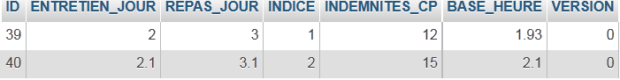
Tabelle BEITRÄGE

5.6. JPA-Implementierung
5.6.1. JPA-/Hibernate-Schicht
Wir werden die JPA-Schicht in der folgenden Umgebung konfigurieren:
 |
Ein Konsolenprogramm wird mit der Datenbank arbeiten. Dazu benötigen Sie:
- eine Datenbank,
- den JDBC-Treiber für das DBMS, in diesem Fall MySQL,
- die JPA-Schicht mit Hibernate implementieren,
- das Konsolenprogramm schreiben.
Wir erstellen das Maven-Projekt [mv-pam-jpa-hibernate] [1]:
 |
In unserer Anwendungsarchitektur benötigen wir die folgenden Elemente:
- die Datenbank,
- den JDBC-Treiber für das MySQL-DBMS,
- die JPA/Hibernate-Schicht (Entitäten und Konfiguration),
- das Testkonsolenprogramm.
5.6.1.1. Die Datenbank
Zunächst erstellen wir eine leere Datenbank. Wir starten WampServer und verwenden das Tool PhpMyAdmin [1]:
 |
- Wählen Sie in [2] die Option [Datenbanken] aus,
 |
- Erstellen Sie in [3] eine Datenbank mit dem Namen [dbpam_hibernate],
- in [4] wird die Datenbank erstellt.
5.6.1.2. Konfiguration der JPA-Schicht
Die Verbindung zwischen der JDBC-Schicht und der Datenbank wird in der Datei [persistence.xml] konfiguriert, die die JPA-Schicht konfiguriert. Diese Datei kann mit NetBeans erstellt werden:
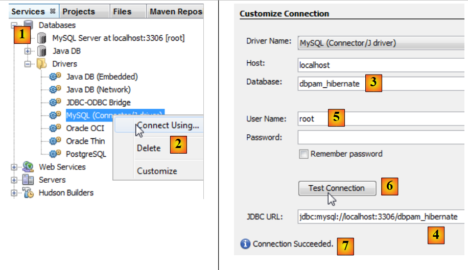 |
- Stellen Sie auf der Registerkarte [Services] [1] über den MySQL-JDBC-Treiber [2] eine Verbindung zur Datenbank her
- geben Sie unter [3] den Namen der Datenbank ein, zu der Sie eine Verbindung herstellen möchten.
- in [4] die JDBC-URL der Datenbank,
- unter [5] melden Sie sich als root ohne Passwort an,
- in [6] können Sie die Verbindung testen,
- in [7] war die Verbindung erfolgreich.
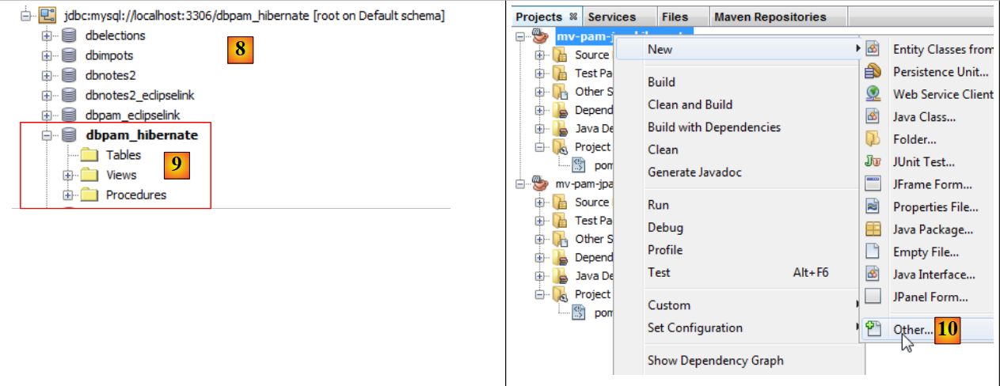 |
- Die Verbindung erscheint in [8] und [9],
- füge in [10] ein neues Element zum Projekt hinzu,
 |
- wählen Sie in [11] die Kategorie [Persistence] und in [12] das Element [Persistence Unit] aus,
- in [13] benennen Sie diese Persistence Unit,
- in [14] wählen wir eine Hibernate-Implementierung aus,
- Geben Sie in [15] die soeben erstellte Verbindung zur MySQL-Datenbank an,
- Geben Sie in [16] an, dass bei der Instanziierung der JPA-Schicht die Tabellen erstellt werden müssen, die den JPA-Entitäten des Projekts entsprechen.
Am Ende des Assistenten wird die Datei [persistence.xml] generiert:
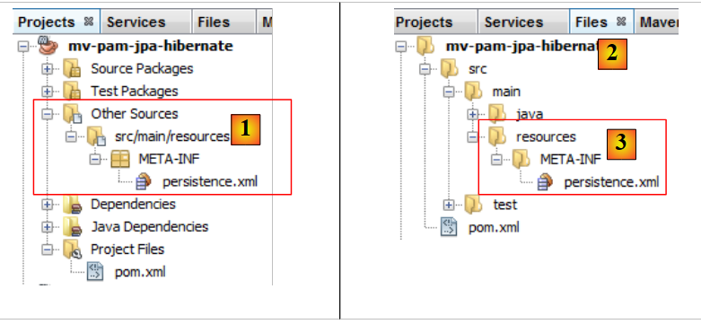 |
- Die Datei erscheint in einem neuen Zweig des Projekts, im Ordner [META-INF] [1],
- der dem Ordner [src/main/resources] des Projekts entspricht [2,3].
Ihr Inhalt lautet wie folgt:
<?xml version="1.0" encoding="UTF-8"?>
<persistence version="2.0" xmlns="http://java.sun.com/xml/ns/persistence" xmlns:xsi="http://www.w3.org/2001/XMLSchema-instance" xsi:schemaLocation="http://java.sun.com/xml/ns/persistence http://java.sun.com/xml/ns/persistence/persistence_2_0.xsd">
<persistence-unit name="mv-pam-jpa-hibernatePU" transaction-type="RESOURCE_LOCAL">
<provider>org.hibernate.ejb.HibernatePersistence</provider>
<properties>
<property name="javax.persistence.jdbc.url" value="jdbc:mysql://localhost:3306/dbpam_hibernate"/>
<property name="javax.persistence.jdbc.password" value=""/>
<property name="javax.persistence.jdbc.driver" value="com.mysql.jdbc.Driver"/>
<property name="javax.persistence.jdbc.user" value="root"/>
<property name="hibernate.cache.provider_class" value="org.hibernate.cache.NoCacheProvider"/>
<property name="hibernate.hbm2ddl.auto" value="create-drop"/>
</properties>
</persistence-unit>
</persistence>
- Zeile 3: Der Name der Persistence-Unit und der Transaktionstyp. RESOURCE_LOCAL gibt an, dass das Projekt Transaktionen selbst verwaltet. In diesem Fall übernimmt das Konsolenprogramm diese Aufgabe.
- Zeile 4: Die verwendete JPA-Implementierung ist Hibernate,
- Zeilen 6–9: die JDBC-Eigenschaften für die Datenbankverbindung,
- Zeile 11: Fordert die Erstellung von Tabellen an, die den JPA-Entitäten entsprechen. Tatsächlich generiert NetBeans hier eine fehlerhafte Konfiguration. Die Konfiguration sollte wie folgt lauten:
<property name="hibernate.hbm2ddl.auto" value="create"/>
Mit der Option create löscht Hibernate bei der Instanziierung der JPA-Schicht die den JPA-Entitäten entsprechenden Tabellen und erstellt sie anschließend neu. Die Option create-drop bewirkt dasselbe, löscht jedoch am Ende des Lebenszyklus der JPA-Schicht alle Tabellen. Es gibt noch eine weitere Option:
<property name="hibernate.hbm2ddl.auto" value="update"/>
Diese Option erstellt die Tabellen, falls sie nicht vorhanden sind, löscht sie jedoch nicht, wenn sie bereits existieren.
Wir fügen der Hibernate-Konfiguration drei weitere Eigenschaften hinzu:
<property name="hibernate.show_sql" value="true"/>
<property name="hibernate.format_sql" value="true"/>
<property name="use_sql_comments" value="true"/>
Diese Einstellungen weisen Hibernate an, die SQL-Anweisungen anzuzeigen, die es an die Datenbank sendet. Die vollständige Datei sieht daher wie folgt aus:
<?xml version="1.0" encoding="UTF-8"?>
<persistence version="2.0" xmlns="http://java.sun.com/xml/ns/persistence" xmlns:xsi="http://www.w3.org/2001/XMLSchema-instance" xsi:schemaLocation="http://java.sun.com/xml/ns/persistence http://java.sun.com/xml/ns/persistence/persistence_2_0.xsd">
<persistence-unit name="mv-pam-jpa-hibernatePU" transaction-type="RESOURCE_LOCAL">
<provider>org.hibernate.ejb.HibernatePersistence</provider>
<class>jpa.Cotisation</class>
<class>jpa.Employe</class>
<class>jpa.Indemnite</class>
<properties>
<property name="javax.persistence.jdbc.url" value="jdbc:mysql://localhost:3306/dbpam_hibernate"/>
<property name="javax.persistence.jdbc.password" value=""/>
<property name="javax.persistence.jdbc.driver" value="com.mysql.jdbc.Driver"/>
<property name="javax.persistence.jdbc.user" value="root"/>
<property name="hibernate.cache.provider_class" value="org.hibernate.cache.NoCacheProvider"/>
<property name="hibernate.hbm2ddl.auto" value="create"/>
<property name="hibernate.show_sql" value="true"/>
<property name="hibernate.format_sql" value="true"/>
<property name="use_sql_comments" value="true"/>
</properties>
</persistence-unit>
</persistence>
5.6.1.3. Abhängigkeiten
Kehren wir zur Projektarchitektur zurück:
 |
Wir haben die JPA-Schicht über die Datei [persistence.xml] konfiguriert. Als Implementierung wurde Hibernate gewählt. Dadurch entstanden Abhängigkeiten im Projekt:
 |
Diese Abhängigkeiten sind auf die Einbindung von Hibernate in das Projekt zurückzuführen. Wir müssen eine weitere Abhängigkeit hinzufügen: den MySQL-JDBC-Treiber, der die JDBC-Schicht der Architektur implementiert. Wir aktualisieren die Datei [pom.xml] wie folgt:
<dependencies>
<dependency>
<groupId>junit</groupId>
<artifactId>junit</artifactId>
<version>3.8.1</version>
<scope>test</scope>
</dependency>
<dependency>
<groupId>mysql</groupId>
<artifactId>mysql-connector-java</artifactId>
<version>5.1.6</version>
</dependency>
<dependency>
<groupId>org.hibernate</groupId>
<artifactId>hibernate-entitymanager</artifactId>
<version>4.1.2</version>
</dependency>
...
<dependency>
<groupId>org.hibernate.common</groupId>
<artifactId>hibernate-commons-annotations</artifactId>
<version>4.0.1.Final</version>
</dependency>
</dependencies>
In den Zeilen 8–12 wird die Abhängigkeit für den MySQL-JDBC-Treiber hinzugefügt.
5.6.1.4. JPA-Entitäten
 |
Frage: Erstellen Sie gemäß dem Ansatz im Beispiel in Abschnitt 4.4 die Entitäten [Cotisation, Indemnite, Employe].
Hinweise:
- Die Entitäten werden Teil eines Pakets namens [jpa] sein,
- jede Entität erhält eine Versionsnummer,
- wenn zwei Entitäten durch eine Beziehung verknüpft sind, wird nur die primäre @ManyToOne-Beziehung erstellt. Die inverse @OneToMany-Beziehung wird nicht erstellt.
5.6.1.5. Der Code für die Hauptklasse
Wir fügen die zuvor entwickelten JPA-Entitäten [1] in das Projekt ein:
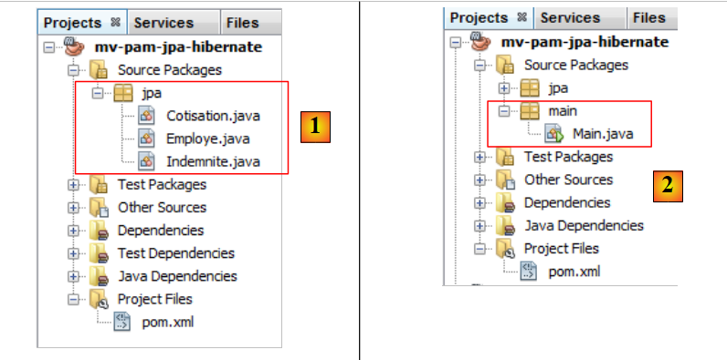 |
Anschließend fügen wir [2] die folgende [main.Main]-Klasse hinzu:
package main;
import javax.persistence.EntityManager;
import javax.persistence.EntityManagerFactory;
import javax.persistence.Persistence;
public class Main {
public static void main(String[] args) {
// creating the Entity Manager is enough to build the JPA layer
EntityManagerFactory emf = Persistence.createEntityManagerFactory("mv-pam-jpa-hibernatePU");
EntityManager em=emf.createEntityManager();
// resource release
em.close();
emf.close();
}
}
- Zeile 10: Wir erstellen die EntityManagerFactory für die Persistenz-Einheit mit dem Namen [mv-pam-jpa-hibernatePU]. Dieser Name stammt aus der Datei [persistence.xml]:
<persistence-unit name="mv-pam-jpa-hibernatePU" transaction-type="RESOURCE_LOCAL">
...
</persistence-unit>
- Zeile 12: Der EntityManager wird erstellt. Dadurch wird die JPA-Schicht erstellt. Die Datei [persistence.xml] wird verwendet, und somit werden die Datenbanktabellen erstellt.
- Zeilen 14–15: Ressourcen werden freigegeben.
5.6.1.6. Tests
Kehren wir zur Architektur unseres Projekts zurück:
 |
Alle Schichten wurden implementiert. Wir führen das Projekt aus [2].
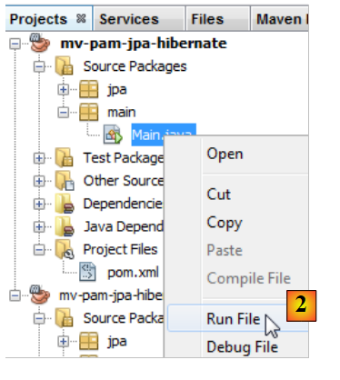 |
Die Konsolenausgabe lautet wie folgt:
1 2 3 4 5 6 7 8 9 10 11 12 13 14 15 16 17 18 19 20 21 22 23 24 25 26 27 28 29 30 31 32 33 34 35 36 37 38 39 40 41 42 43 44 45 46 47 48 49 50 51 52 53 54 55 56 57 58 59 60 61 62 63 64 65 66 67 68 69 70 71 72 73 74 75 76 77 78 79 80 81 82 83 84 85 86 87 88 89 90 91 92 93 94 95 96 97 98 99 100 101 102 103 104 105 | |
Die Konsole enthält nur Hibernate-Protokolle, da das ausgeführte Programm nichts anderes tut, als die JPA-Schicht zu instanziieren. Beachten Sie folgende Punkte:
- Zeile 43: Hibernate versucht, den Fremdschlüssel aus der Tabelle [EMPLOYEES] zu löschen,
- Zeilen 51–55: Löschen der drei Tabellen,
- Zeile 57: Erstellung der Tabelle [COTISATIONS],
- Zeile 67: Erstellung der Tabelle [EMPLOYEES],
- Zeile 80: Erstellung der Tabelle [INDEMNITIES],
- Zeile 91: Erstellung des Fremdschlüssels für die Tabelle [EMPLOYEES].
In NetBeans können Sie die Tabellen in der zuvor erstellten Verbindung anzeigen:
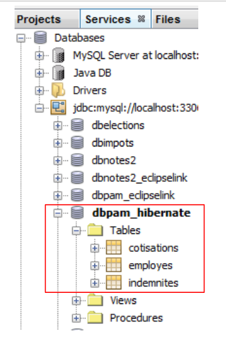 |
Die erstellten Tabellen hängen sowohl von der verwendeten JPA-Schicht-Implementierung als auch vom verwendeten DBMS ab. Daher kann eine JPA/EclipseLink-Implementierung mit derselben Datenbank unterschiedliche Tabellen generieren. Das werden wir uns nun ansehen.
5.6.2. JPA / EclipseLink-Schicht
Wir werden ein neues Maven-Projekt in der folgenden Umgebung erstellen:
 |
Wir werden die Schritte aus dem vorherigen Abschnitt befolgen:
- Erstellen Sie eine MySQL-Datenbank [dbpam_eclipselink]. Wir verwenden das Skript [dbpam_eclipselink.sql], um diese zu generieren,
- die Projektdatei [persistence.xml] erstellen. Verwenden Sie die EclipseLink JPA 2.0-Implementierung,
- füge die Abhängigkeit vom MySQL-JDBC-Treiber zu den generierten Abhängigkeiten hinzu,
- füge die JPA-Entitäten und das Konsolenprogramm hinzu,
- führen Sie die Tests aus.
Die Datei [persistence.xml] sieht wie folgt aus:
<?xml version="1.0" encoding="UTF-8"?>
<persistence version="2.0" xmlns="http://java.sun.com/xml/ns/persistence" xmlns:xsi="http://www.w3.org/2001/XMLSchema-instance" xsi:schemaLocation="http://java.sun.com/xml/ns/persistence http://java.sun.com/xml/ns/persistence/persistence_2_0.xsd">
<persistence-unit name="pam-jpa-eclipselinkPU" transaction-type="RESOURCE_LOCAL">
<provider>org.eclipse.persistence.jpa.PersistenceProvider</provider>
<class>jpa.Cotisation</class>
<class>jpa.Employe</class>
<class>jpa.Indemnite</class>
<properties>
<property name="eclipselink.target-database" value="MySQL"/>
<property name="javax.persistence.jdbc.url" value="jdbc:mysql://localhost:3306/dbpam_eclipselink"/>
<property name="javax.persistence.jdbc.password" value=""/>
<property name="javax.persistence.jdbc.driver" value="com.mysql.jdbc.Driver"/>
<property name="javax.persistence.jdbc.user" value="root"/>
<property name="eclipselink.logging.level" value="FINE"/>
<property name="eclipselink.ddl-generation" value="drop-and-create-tables"/>
</properties>
</persistence-unit>
</persistence>
- Die Eigenschaften 9–13 wurden vom NetBeans-Assistenten generiert,
- Zeile 14: Mit dieser Eigenschaft können wir die Protokollierungsstufe von EclipseLink festlegen. Die Stufe „FINE“ ermöglicht es uns, die SQL-Anweisungen zu sehen, die EclipseLink in der Datenbank ausführen wird.
- Zeile 15: Wenn die JPA/EclipseLink-Schicht instanziiert wird, werden die JPA-Entitätstabellen gelöscht und anschließend neu erstellt.
Die Konsolenausgabe lautet wie folgt:
- Zeilen 26–30: Verbindung zur MySQL-Datenbank,
- Zeilen 31–34: Bestätigung, dass die Verbindung erfolgreich hergestellt wurde,
- Zeile 36: Löschen des Fremdschlüssels aus der Tabelle [EMPLOYEES],
- Zeile 37: Löschen der Tabelle [COTISATIONS],
- Zeile 38: Erstellung der Tabelle [CONTRIBUTIONS]. Es ist anzumerken, dass der Primärschlüssel ID nicht über das MySQL-Attribut auto_increment verfügt. Das bedeutet, dass MySQL die Primärschlüsselwerte nicht generiert,
- Zeile 39: Löschen der Tabelle [EMPLOYEES],
- Zeile 40: Erstellen der Tabelle [EMPLOYEES]. Ihr Primärschlüssel ID verfügt nicht über das MySQL-Attribut auto_increment,
- Zeile 41: Löschen der Tabelle [INDEMNITIES],
- Zeile 42: Erstellung der Tabelle [INDEMNITIES]. Ihr Primärschlüssel ID verfügt nicht über das MySQL-Attribut auto_increment,
- Zeile 43: Erstellen eines Fremdschlüssels von der Tabelle [EMPLOYEES] zur Tabelle [BENEFITS],
- Zeile 44: Erstellen einer Tabelle [SEQUENCE]. Diese wird verwendet, um die Primärschlüssel für die drei vorherigen Tabellen zu generieren,
- Zeile 47: Es tritt eine Ausnahme auf, da diese Tabelle bereits existierte,
- Zeilen 51–53: Initialisierung der Tabelle [SEQUENCE].
Die Existenz der generierten Tabellen kann in NetBeans [1] überprüft werden:
 |
Daher generieren die JPA-Implementierungen von Hibernate und EclipseLink auf der Grundlage derselben JPA-Entitäten nicht dieselben Tabellen. Im weiteren Verlauf dieses Dokuments gilt für die verwendete JPA-Implementierung:
- Hibernate, verwenden wir die Datenbank [dbpam_hibernate],
- EclipseLink, verwenden wir die Datenbank [dbpam_eclipselink].
5.6.3. Zu erledigende Aufgaben
Nach dem gleichen Verfahren wie zuvor,
- Erstellen und testen Sie ein Projekt [mv-pam-jpa-hibernate-oracle] unter Verwendung einer Hibernate-JPA-Implementierung und eines Oracle-DBMS,
- Erstellen und testen Sie ein Projekt [mv-pam-jpa-hibernate-mssql] unter Verwendung einer Hibernate-JPA-Implementierung und eines SQL-Server-DBMS,
- Erstellen und Testen Sie ein Projekt [mv-pam-jpa-eclipselink-oracle] unter Verwendung einer EclipseLink-JPA-Implementierung und eines Oracle-DBMS,
- Erstellen und Testen eines Projekts [mv-pam-jpa-eclipselink-mssql] unter Verwendung einer EclipseLink-JPA-Implementierung und eines SQL Server-DBMS,
5.6.4. Lazy oder Eager?
Kehren wir zu einer möglichen Definition der Entität [Employee] zurück:
package jpa;
...
@Entity
@Table(name="EMPLOYES")
public class Employe implements Serializable {
@Id
@GeneratedValue(strategy = GenerationType.AUTO)
private Long id;
@Version
@Column(name="VERSION",nullable=false)
private int version;
@Column(name="SS", nullable=false, unique=true, length=15)
private String SS;
@Column(name="NOM", nullable=false, length=30)
private String nom;
@Column(name="PRENOM", nullable=false, length=20)
private String prenom;
@Column(name="ADRESSE", nullable=false, length=50)
private String adresse;
@Column(name="VILLE", nullable=false, length=30)
private String ville;
@Column(name="CP", nullable=false, length=5)
private String codePostal;
@ManyToOne(fetch= FetchType.LAZY)
@JoinColumn(name="INDEMNITE_ID",nullable=false)
private Indemnite indemnite;
...
}
Die Zeilen 27–29 definieren den Fremdschlüssel von der Tabelle [EMPLOYEES] zur Tabelle [INDEMNITIES]. Das Fetch-Attribut in Zeile 27 definiert die Abrufstrategie für das Feld „indemnity“ in Zeile 29. Es gibt zwei Modi:
- FetchType.LAZY: Wenn ein Mitarbeiter abgefragt wird, wird die entsprechende Entschädigung nicht abgerufen. Sie wird abgerufen, wenn zum ersten Mal auf das Feld [Employee].indemnity verwiesen wird.
- FetchType.EAGER: Bei der Suche nach einem Mitarbeiter wird die entsprechende Zulage abgerufen. Dies ist der Standardmodus, wenn kein Modus angegeben wird.
Um den Vorteil der Option FetchType.LAZY zu verstehen, betrachten Sie das folgende Beispiel. Auf einer Webseite wird eine Liste von Mitarbeitern ohne Angabe ihrer Vergütung mit einem [Details]-Link angezeigt. Durch Klicken auf diesen Link wird dann die Vergütung für den ausgewählten Mitarbeiter angezeigt. Wir sehen, dass:
- Um die erste Seite anzuzeigen, benötigen wir die Mitarbeiter nicht zusammen mit ihren Sozialleistungen. Der Modus „FetchType.LAZY“ ist daher geeignet;
- Um die zweite Seite mit den Details anzuzeigen, muss eine zusätzliche Abfrage an die Datenbank gesendet werden, um die Leistungen des ausgewählten Mitarbeiters abzurufen.
Der Modus „FetchType.LAZY“ verhindert, dass zu viele Daten abgerufen werden, die die Anwendung nicht sofort benötigt. Sehen wir uns ein Beispiel an.
Das Projekt [mv-pam-jpa-hibernate] wird dupliziert:
 |
- In [1] wird das Projekt kopiert,
- in [2] geben wir den Ordner für die Kopie an und in [3] dessen Namen,
- in [4] hat das neue Projekt denselben Namen wie das alte. Das ändern wir:
 |
- In [1] benennen wir das Projekt um,
- in [2] benennen wir das Projekt und seine artifactId um,
- in [3] das neue Projekt.
Wir ändern das Programm [Main.java] wie folgt:
package main;
import java.util.List;
import javax.persistence.EntityManager;
import javax.persistence.EntityManagerFactory;
import javax.persistence.Persistence;
import jpa.Employe;
public class Main {
// the JPQL query below brings back an employee
// the foreign key [Employe].indemnite is in FetchType.LAZY
public static void main(String[] args) {
// creating the Entity Manager is enough to build the JPA layer
EntityManagerFactory emf = Persistence.createEntityManagerFactory("pam-jpa-hibernatePU");
// first attempt
EntityManager em = emf.createEntityManager();
Employe employe = (Employe) em.createQuery("select e from Employe e where e.nom=:nom").setParameter("nom", "Jouveinal").getSingleResult();
em.close();
// we display the employee
try {
System.out.println(employe);
} catch (Exception ex) {
System.out.println(ex);
}
// second test
em = emf.createEntityManager();
employe = (Employe) em.createQuery("select e from Employe e left join fetch e.indemnite where e.nom=:nom").setParameter("nom", "Jouveinal").getSingleResult();
// free up resources
em.close();
// we display the employee
try {
System.out.println(employe);
} catch (Exception ex) {
System.out.println(ex);
}
// resource release
emf.close();
}
}
- Zeile 15: Wir erstellen die EntityManagerFactory für die JPA-Schicht,
- Zeile 17: Wir rufen den EntityManager ab, der uns die Interaktion mit der JPA-Schicht ermöglicht,
- Zeile 18: Wir rufen den Mitarbeiter namens Jouveinal ab,
- Zeile 19: Wir schließen den EntityManager. Dadurch wird der Persistenzkontext geschlossen.
- Zeile 22: Wir zeigen den abgerufenen Mitarbeiter an.
Die Klasse [Employee] sieht wie folgt aus:
package jpa;
...
@Entity
@Table(name="EMPLOYES")
public class Employe implements Serializable {
@Id
@GeneratedValue(strategy = GenerationType.AUTO)
private Long id;
@Version
@Column(name="VERSION",nullable=false)
private int version;
@Column(name="SS", nullable=false, unique=true, length=15)
private String SS;
@Column(name="NOM", nullable=false, length=30)
private String nom;
@Column(name="PRENOM", nullable=false, length=20)
private String prenom;
@Column(name="ADRESSE", nullable=false, length=50)
private String adresse;
@Column(name="VILLE", nullable=false, length=30)
private String ville;
@Column(name="CP", nullable=false, length=5)
private String codePostal;
@ManyToOne(fetch= FetchType.LAZY)
@JoinColumn(name="INDEMNITE_ID",nullable=false)
private Indemnite indemnite;
/**
* Returns a string representation of the object. This implementation constructs
* that representation based on the id fields.
* @return a string representation of the object.
*/
@Override
public String toString() {
return "jpa.Employe[id=" + getId()
+ ",version="+getVersion()
+",SS="+getSS()
+ ",nom="+getNom()
+ ",prenom="+getPrenom()
+ ",adresse="+getAdresse()
+",ville="+getVille()
+",code postal="+getCodePostal()
+",indice="+getIndemnite().getIndice()
+"]";
}
...
}
- Zeile 27: Das Feld „indemnite“ wird im LAZY-Modus abgerufen,
- Zeile 47: verwendet das Feld „indemnite“. Wenn die Methode „toString“ aufgerufen wird, während das Feld „indemnite“ noch nicht abgerufen wurde, wird es an dieser Stelle abgerufen. Es sei denn, der Persistenzkontext wurde geschlossen, wie im Beispiel.
Kehren wir zum [Main]-Code zurück:
- Zeilen 21–25: Es sollte eine Ausnahme auftreten. Der Grund dafür ist, dass die toString-Methode aufgerufen wird. Diese verwendet das Feld „indemnite“. Dieses Feld wird nachgeschlagen. Da der Persistenzkontext geschlossen wurde, existiert die abgerufene [Employee]-Entität nicht mehr, daher die Ausnahme.
- Zeile 27: Wir erstellen einen neuen EntityManager,
- Zeile 28: Wir rufen den Mitarbeiter Jouveinal ab, indem wir die zugehörige Zulage in der JPQL-Abfrage explizit anfordern. Diese explizite Anforderung ist notwendig, da der Abrufmodus für diese Zulage LAZY ist,
- Zeile 30: Wir schließen den EntityManager,
- Zeilen 32–36: Wir zeigen den Mitarbeiter erneut an. Es sollte keine Ausnahme auftreten.
Um das Projekt auszuführen, benötigen Sie eine mit Daten gefüllte Datenbank. Diese erstellen Sie, indem Sie die Schritte in Abschnitt 5.5 befolgen. Außerdem muss die Datei [persistence.xml] geändert werden:
<?xml version="1.0" encoding="UTF-8"?>
<persistence version="2.0" xmlns="http://java.sun.com/xml/ns/persistence" xmlns:xsi="http://www.w3.org/2001/XMLSchema-instance" xsi:schemaLocation="http://java.sun.com/xml/ns/persistence http://java.sun.com/xml/ns/persistence/persistence_2_0.xsd">
<persistence-unit name="mv-pam-jpa-hibernatePU" transaction-type="RESOURCE_LOCAL">
<provider>org.hibernate.ejb.HibernatePersistence</provider>
<class>jpa.Cotisation</class>
<class>jpa.Employe</class>
<class>jpa.Indemnite</class>
<properties>
<property name="javax.persistence.jdbc.url" value="jdbc:mysql://localhost:3306/dbpam_hibernate"/>
<property name="javax.persistence.jdbc.password" value=""/>
<property name="javax.persistence.jdbc.driver" value="com.mysql.jdbc.Driver"/>
<property name="javax.persistence.jdbc.user" value="root"/>
<property name="hibernate.cache.provider_class" value="org.hibernate.cache.NoCacheProvider"/>
</properties>
</persistence-unit>
</persistence>
- Wir haben die Option entfernt, die die Tabellen erstellt hat. Die Datenbank ist hier bereits vorhanden und gefüllt,
- und wir haben die Optionen entfernt, die dazu führten, dass Hibernate die an die Datenbank gesendeten SQL-Anweisungen protokollierte.
Beim Ausführen des Projekts werden die folgenden beiden Meldungen in der Konsole ausgegeben:
- Zeile 1: Die Ausnahme, die beim Versuch auftrat, die fehlende Vergütung abzurufen, während die Sitzung geschlossen war. Wir sehen, dass die Vergütung aufgrund des LAZY-Modus nicht abgerufen wurde,
- Zeile 2: Der Mitarbeiter mit seiner Zulage, abgerufen über eine Abfrage, die den LAZY-Modus umgangen hat.
5.6.5. Zu erledigende Aufgaben
Erstellen Sie nach einem ähnlichen Verfahren wie dem soeben beschriebenen ein Projekt [mv-pam-pa-eclipselink-lazy], das das Verhalten von EclipseLink im LAZY-Modus demonstriert.
Es werden folgende Ergebnisse erzielt:
Im LAZY-Modus lieferten beide Abfragen neben dem Mitarbeiter auch die Vergütung. Bei der Online-Recherche zu dieser Anomalie stellen wir fest, dass die Anmerkung [FetchType.LAZY] (Zeile 1):
@ManyToOne(fetch= FetchType.LAZY)
@JoinColumn(name="INDEMNITE_ID",nullable=false)
private Indemnite indemnite;
ist keine Anforderung, sondern ein Vorschlag. Der JPA-Implementierer ist nicht verpflichtet, sich daran zu halten. Wir sehen daher, dass der Code manchmal von der verwendeten JPA-Implementierung abhängig wird. Es ist möglich, EclipseLink so zu konfigurieren, dass es sich im LAZY-Modus wie erwartet verhält.
5.6.6. Weiter
Die Architektur der zu erstellenden Anwendung sieht wie folgt aus:
 |
Im weiteren Verlauf dieses Dokuments werden wir das Maven-Projekt [mv-pam-jpa-hibernate] in das Projekt [mv-pam-spring-hibernate] kopieren [1, 2, 3]:
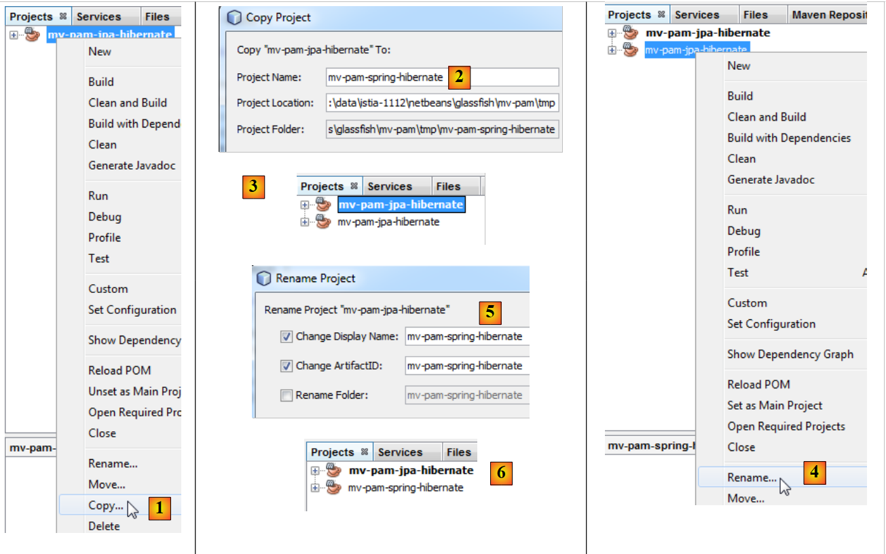 |
- Anschließend benennen wir das neue Projekt um [4, 5, 6].
Wir werden die Abhängigkeiten des neuen Projekts ändern. Die Datei [pom.xml] sieht dann wie folgt aus:
<project xmlns="http://maven.apache.org/POM/4.0.0" xmlns:xsi="http://www.w3.org/2001/XMLSchema-instance"
xsi:schemaLocation="http://maven.apache.org/POM/4.0.0 http://maven.apache.org/xsd/maven-4.0.0.xsd">
<modelVersion>4.0.0</modelVersion>
<groupId>istia.st</groupId>
<artifactId>mv-pam-spring-hibernate</artifactId>
<version>1.0-SNAPSHOT</version>
<packaging>jar</packaging>
<name>mv-pam-spring-hibernate</name>
<url>http://maven.apache.org</url>
<repositories>
<repository>
<url>http://repo1.maven.org/maven2/</url>
<id>swing-layout</id>
<layout>default</layout>
<name>Repository for library Library[swing-layout]</name>
</repository>
</repositories>
<properties>
<project.build.sourceEncoding>UTF-8</project.build.sourceEncoding>
</properties>
<dependencies>
<dependency>
<groupId>junit</groupId>
<artifactId>junit</artifactId>
<version>4.10</version>
<scope>test</scope>
<type>jar</type>
</dependency>
<dependency>
<groupId>commons-dbcp</groupId>
<artifactId>commons-dbcp</artifactId>
<version>1.2.2</version>
</dependency>
<dependency>
<groupId>commons-pool</groupId>
<artifactId>commons-pool</artifactId>
<version>1.6</version>
</dependency>
<dependency>
<groupId>org.springframework</groupId>
<artifactId>spring-tx</artifactId>
<version>3.1.1.RELEASE</version>
<type>jar</type>
</dependency>
<dependency>
<groupId>org.springframework</groupId>
<artifactId>spring-beans</artifactId>
<version>3.1.1.RELEASE</version>
<type>jar</type>
</dependency>
<dependency>
<groupId>org.springframework</groupId>
<artifactId>spring-context</artifactId>
<version>3.1.1.RELEASE</version>
<type>jar</type>
</dependency>
<dependency>
<groupId>org.springframework</groupId>
<artifactId>spring-orm</artifactId>
<version>3.1.1.RELEASE</version>
<type>jar</type>
</dependency>
<dependency>
<groupId>org.hibernate</groupId>
<artifactId>hibernate-entitymanager</artifactId>
<version>4.1.2</version>
<type>jar</type>
</dependency>
<dependency>
<groupId>mysql</groupId>
<artifactId>mysql-connector-java</artifactId>
<version>5.1.6</version>
</dependency>
<dependency>
<groupId>org.swinglabs</groupId>
<artifactId>swing-layout</artifactId>
<version>1.0.3</version>
</dependency>
</dependencies>
</project>
- Zeilen 25–31: die Abhängigkeit für JUnit-Tests,
- Zeilen 32–41: Abhängigkeiten für den Apache DBCP-Verbindungspool,
- Zeilen 42–65: Abhängigkeiten für das Spring-Framework,
- Zeilen 67–71: Abhängigkeiten für die JPA/Hibernate-Implementierung,
- Zeilen 72–76: die Abhängigkeit für den MySQL-JDBC-Treiber,
- Zeilen 77–81: die Abhängigkeit für die Swing-Schnittstelle. Diese wird von NetBeans automatisch hinzugefügt, wenn eine Swing-Schnittstelle zum Projekt hinzugefügt wird.
Außerdem werden wir die beiden MySQL-Datenbanken generieren:
- [dbpam_hibernate] aus dem Skript [dbpam_hibernate.sql],
- [dbpam_eclipselink] aus dem Skript [dbpam_eclipselink.sql],
5.7. Die Schnittstellen-IM s für die [Business]- und [DAO]-Schichten
Kehren wir zur Anwendungsarchitektur zurück:
 |
Welche Schnittstelle sollte in der oben dargestellten Architektur die [DAO]-Schicht gegenüber der [Business]-Schicht bereitstellen, und welche Schnittstelle sollte die [Business]-Schicht gegenüber der [UI]-Schicht bereitstellen? Ein erster Ansatz zur Definition der Schnittstellen der verschiedenen Schichten besteht darin, die verschiedenen Anwendungsfälle der Anwendung zu untersuchen. Hier haben wir zwei, je nach gewählter Benutzeroberfläche: Konsole oder grafisches Formular.
Betrachten wir, wie die Konsolenanwendung genutzt wird:
Die App erhält drei Angaben vom Nutzer (siehe Zeile 1 oben)
- die Sozialversicherungsnummer der Kinderbetreuungskraft
- die Anzahl der im Monat geleisteten Arbeitsstunden
- die Anzahl der im Monat gearbeiteten Tage
Auf der Grundlage dieser Informationen und weiterer in Konfigurationsdateien gespeicherter Daten zeigt die Anwendung folgende Informationen an:
- Zeilen 4–6: die eingegebenen Werte
- Zeilen 8–10: Informationen zu dem Mitarbeiter, dessen Sozialversicherungsnummer angegeben wurde
- Zeilen 12–14: die Sätze für die verschiedenen Sozialversicherungsbeiträge
- Zeilen 16–17: die verschiedenen Zulagen, die an die Kinderbetreuungskraft gezahlt werden
- Zeilen 19–24: Posten auf der Gehaltsabrechnung der Kinderbetreuungskraft
Bestimmte Informationen müssen von der [Business]-Ebene an die [UI]-Ebene übermittelt werden:
- Informationen zu einem Kinderbetreuungsanbieter, der anhand seiner Sozialversicherungsnummer identifiziert wird. Diese Informationen befinden sich in der Tabelle [EMPLOYEES]. Dadurch können die Zeilen 6–8 angezeigt werden.
- die Beträge der verschiedenen Sozialversicherungsbeiträge, die vom Bruttogehalt abzuziehen sind. Diese Informationen befinden sich in der Tabelle [COTISATIONS]. Dadurch können die Zeilen 10–12 angezeigt werden.
- die Beträge der verschiedenen Zulagen im Zusammenhang mit der Tätigkeit als Tagesmutter. Diese Informationen befinden sich in der Tabelle [INDEMNITES]. Dadurch können die Zeilen 14–15 angezeigt werden.
- die Bestandteile des Gehalts, die in den Zeilen 18–22 angezeigt werden.
Auf dieser Grundlage könnten wir uns für eine erste Implementierung der Schnittstelle [IMetier] entscheiden, die von der [metier]-Schicht an die [ui]-Schicht übergeben wird:
- Zeile 1: Die Elemente der [business]-Schicht werden im [business]-Paket abgelegt
- Zeile 5: Die Methode [calculatePaystub] nimmt als Parameter die drei von der [ui]-Schicht erhaltenen Informationen entgegen und gibt ein Objekt vom Typ [Paystub] zurück, das die Informationen enthält, die die [ui]-Schicht auf der Konsole anzeigen wird. Die Klasse [ Paystub] könnte wie folgt aussehen:
- Zeile 9: der auf der Gehaltsabrechnung aufgeführte Mitarbeiter – Information Nr. 1, die von der [ui]-Ebene angezeigt wird
- Zeile 10: die verschiedenen Beitragssätze – Information Nr. 2, die von der [ui]-Ebene angezeigt wird
- Zeile 11: die verschiedenen Zulagen, die an den Index des Mitarbeiters gekoppelt sind – Information Nr. 3, angezeigt von der [ui]-Ebene
- Zeile 12: die Bestandteile seines Gehalts – Information Nr. 4, angezeigt von der [ui]-Ebene
Ein zweiter Anwendungsfall für die [business]-Ebene ergibt sich im Zusammenhang mit der grafischen Benutzeroberfläche:
 |
Wie oben gezeigt, werden in der Dropdown-Liste [1, 2] alle Mitarbeiter angezeigt. Diese Liste muss von der [Business]-Schicht angefordert werden. Die Schnittstellen ace für diese Schicht entwickelt sich dann wie folgt:
- Zeile [10]: Die Methode, mit der die [UI]-Schicht die Liste aller Mitarbeiter von der [Business]-Schicht anfordern kann.
Die [Business]-Schicht kann die Felder [Employee, Contribution, Allowance] des oben genannten [Payroll]-Objekts nur durch Abfragen der [DAO]-Schicht initialisieren, da diese Informationen in den Datenbanktabellen gespeichert sind. Dasselbe gilt für das Abrufen der Liste aller Mitarbeiter. Wir könnten eine einzige [DAO]-Schnittstelle erstellen, um den Zugriff auf die drei Entitäten [Employee, Contribution, Allowance] zu verwalten. Wir haben uns hier jedoch dafür entschieden, pro Entität eine [DAO]-Schnittstelle zu erstellen.
Die [DAO]-Schnittstelle für den Zugriff auf die [Contribution]-Entitäten in der [CONTRIBUTIONS]-Tabelle sieht wie folgt aus:
- Zeile 6: Die Schnittstelle [ICotisationDao] verwaltet den Zugriff auf die Entität [Cotisation] und damit auf die Tabelle [COTISATIONS] in der Datenbank. Unsere Anwendung benötigt lediglich die Methode [findAll] in Zeile 16, die den gesamten Inhalt der Tabelle [COTISATIONS] abruft. Hier wollten wir einen allgemeineren Fall behandeln, in dem alle CRUD-Operationen (Create, Read, Update, Delete) an der Entität durchgeführt werden.
- Zeile 8: Die Methode [create] erstellt eine neue [Cotisation]-Entität
- Zeile 10: Die Methode [edit] ändert eine vorhandene [Cotisation]-Entität
- Zeile 12: Die Methode [destroy] löscht eine vorhandene [Cotisation]-Entität
- Zeile 14: Die Methode [find] ruft eine vorhandene [Cotisation]-Entität anhand ihrer ID ab
- Zeile 16: Die Methode [findAll] gibt eine Liste aller vorhandenen [Membership]-Entitäten zurück
Schauen wir uns die Signatur der Methode [create] einmal genauer an:
Die Methode create hat einen Parameter cotisation vom Typ Cotisation. Der Parameter cotisation muss persistent sein, d. h. in der Tabelle [COTISATIONS] gespeichert werden. Vor dieser Persistenz hat der Parameter cotisation einen Identifikator id ohne Wert. Nach der Persistenz hat das Feld id einen Wert, der dem Primärschlüssel des Datensatzes entspricht, der zur Tabelle [COTISATIONS] hinzugefügt wurde. Der Parameter cotisation ist daher ein Eingabe-/Ausgabeparameter der Methode create. Es erscheint nicht notwendig, dass die create-Methode den Parameter cotisation zusätzlich als Ergebnis zurückgibt. Da die aufrufende Methode eine Referenz auf das Objekt [Cotisation cotisation] hält, hat sie bei einer Änderung Zugriff auf das geänderte Objekt, da sie eine Referenz darauf besitzt. Sie kann daher den Wert kennen, den die create-Methode dem Feld id des Objekts [Cotisation cotisation] zugewiesen hat. Die Methodensignatur könnte daher wie folgt vereinfacht werden:
Beim Schreiben einer Schnittstelle ist zu beachten, dass diese in zwei verschiedenen Kontexten verwendet werden kann: im lokalen und im Remote- . Im lokalen Kontext werden die aufrufende und die aufgerufene Methode in derselben JVM ausgeführt:
 |
Wenn die [Business]-Schicht die create-Methode der [DAO]-Schicht aufruft, verfügt sie tatsächlich über einen Verweis auf den Parameter [Membership membership], den sie an die Methode übergibt.
Im Remote-Kontext werden die aufrufende und die aufgerufene Methode in unterschiedlichen JVMs ausgeführt:
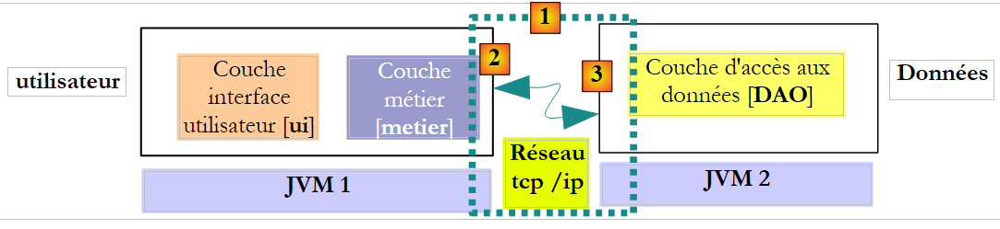 |
Im obigen Beispiel läuft die [Business]-Schicht in JVM 1 und die [DAO]-Schicht in JVM 2 auf zwei verschiedenen Rechnern. Die beiden Schichten kommunizieren nicht direkt miteinander. Zwischen ihnen liegt eine Schicht, die wir als Kommunikationsschicht [1] bezeichnen. Diese besteht aus einer Sendeschicht [2] und einer Empfangsschicht [3]. Der Entwickler muss diese Kommunikationsschichten in der Regel nicht selbst schreiben. Sie werden automatisch von Software-Tools generiert. Die [Business]-Schicht wird so geschrieben, als würde sie in derselben JVM wie die [DAO]-Schicht laufen. Daher sind keine Codeänderungen erforderlich.
Der Kommunikationsmechanismus zwischen der [Business]-Schicht und der [DAO]-Schicht ist wie folgt:
- Die [Business]-Schicht ruft die create-Methode der [DAO]-Schicht auf und übergibt ihr den Parameter [Contribution contribution1]
- Dieser Parameter wird tatsächlich an die Übertragungsschicht [2] übergeben. Diese Schicht überträgt den Wert des Parameters „contribution1“ über das Netzwerk, nicht dessen Referenz. Die genaue Form dieses Werts hängt vom verwendeten Kommunikationsprotokoll ab.
- Die empfangende [3]-Schicht ruft diesen Wert ab und verwendet ihn, um ein [Cotisation cotisation2]-Objekt zu rekonstruieren, das den ursprünglich von der [Business]-Schicht gesendeten Parameter widerspiegelt. Wir haben nun zwei (inhaltlich) identische Objekte in zwei verschiedenen JVMs: cotisation1 und cotisation2.
- Die Präsentationsschicht übergibt das Objekt `contribution2` an die Methode `create` der [DAO]-Schicht, die es in der Datenbank persistiert. Nach diesem Vorgang wurde das Feld `id` des Objekts `contribution2` mit dem Primärschlüssel des Datensatzes initialisiert, der zur Tabelle [COTISATIONS] hinzugefügt wurde. Dies ist nicht der Fall für das Objekt `contribution1`, auf das die [business]-Schicht verweist. Wenn wir möchten, dass die [business]-Schicht auf das Objekt `contribution2` verweist, müssen wir es an die Schicht übergeben. Daher müssen wir die Signatur der Methode `create` in der [DAO]-Schicht ändern:
- Mit dieser neuen Signatur gibt die create-Methode das persistierte Objekt contribution2 zurück. Dieses Ergebnis wird an die empfangende Schicht [3] zurückgegeben, die die [DAO]-Schicht aufgerufen hat. Die [DAO]-Schicht gibt den Wert (nicht die Referenz) von contribution2 an die sendende Schicht [2] zurück.
- Die sendende Schicht [2] ruft diesen Wert ab und verwendet ihn, um ein Objekt [Membership membership3] zu rekonstruieren, das das von der create-Methode der [DAO]-Schicht zurückgegebene Ergebnis widerspiegelt.
- Das Objekt [Contribution contribution3] wird an die Methode in der [Business]-Schicht zurückgegeben, deren Aufruf der create-Methode der [DAO]-Schicht diesen gesamten Mechanismus ausgelöst hatte. Die [Business]-Schicht kann somit den Primärschlüsselwert ermitteln, der dem Objekt [Contribution contribution1] zugewiesen wurde, für das sie die Persistenz angefordert hatte: Dies ist der Wert des Feldes id in contribution3.
Die vorstehende Architektur ist nicht die gängigste. Häufiger befinden sich die [business]- und [DAO]-Schichten in derselben JVM:
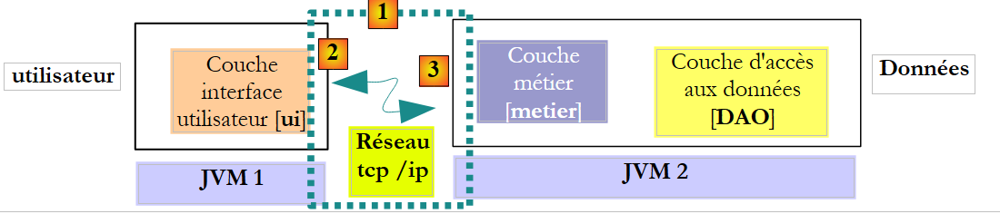 |
In dieser Architektur sind es die Methoden der [Business]-Schicht, die Ergebnisse zurückgeben müssen, nicht die der [DAO]-Schicht. Dennoch lautet die folgende Signatur der create-Methode der [DAO]-Schicht:
ermöglicht es uns, keine Annahmen über die tatsächlich vorhandene Architektur zu treffen. Die Verwendung von Signaturen, die unabhängig von der gewählten Architektur funktionieren – egal ob lokal oder remote –, bedeutet, dass, wenn eine aufgerufene Methode einige ihrer Parameter ändert:
- Diese müssen ebenfalls Teil des Ergebnisses der aufgerufenen Methode sein
- Die aufrufende Methode muss das Ergebnis der aufgerufenen Methode verwenden und nicht die Verweise auf die geänderten Parameter, die sie an die aufgerufene Methode übergeben hat.
Dies ermöglicht uns den Übergang von einer lokalen zu einer Remote-Architektur, ohne den Code ändern zu müssen. Betrachten wir die Schnittstelle [ICotisationDao] vor diesem Hintergrund noch einmal:
- Zeile 8: Der Fall für die create-Methode wurde behandelt
- Zeile 10: Die Methode „edit“ verwendet ihren Parameter [Cotisation cotisation1], um den Datensatz in der Tabelle [COTISATIONS] zu aktualisieren, der denselben Primärschlüssel wie das Cotisation-Objekt hat. Sie gibt das Objekt cotisation2 zurück, das eine Darstellung des geänderten Datensatzes ist. Der Parameter contribution1 selbst wird nicht geändert. Die Methode muss contribution2 als Ergebnis zurückgeben, unabhängig davon, ob es sich um eine Remote- oder eine lokale Architektur handelt.
- Zeile 12: Die Methode „destroy“ löscht den Datensatz aus der Tabelle [COTISATIONS], der denselben Primärschlüssel wie das als Parameter übergebene Beitrag-Objekt hat. Das Beitrag-Objekt wird nicht verändert. Daher muss es nicht zurückgegeben werden.
- Zeile 14: Der Parameter id der Methode find wird von der Methode nicht verändert. Er muss nicht im Ergebnis enthalten sein.
- Zeile 16: Die Methode „findAll“ hat keine Parameter. Wir müssen sie daher nicht untersuchen.
Letztendlich muss nur die Signatur der create-Methode angepasst werden, damit sie in einer Remote-Architektur verwendet werden kann. Die obige Argumentation gilt auch für die anderen [DAO]-Schnittstellen. Wir werden sie hier nicht wiederholen, sondern stattdessen Signaturen verwenden, die sowohl in Remote- als auch in lokalen Architekturen einsetzbar sind.
Die [DAO]-Schnittstelle für den Zugriff auf [Indemnite]-Entitäten in der [INDEMNITES]-Tabelle sieht wie folgt aus:
- Zeile 6: Die Schnittstelle [IIndemniteDao] verwaltet den Zugriff auf die Entität [Indemnite] und damit auf die Tabelle [INDEMNITES] in der Datenbank. Unsere Anwendung benötigt lediglich die Methode [findAll] in Zeile 16, die den gesamten Inhalt der Tabelle [INDEMNITES] abruft. Hier wollten wir einen allgemeineren Fall behandeln, in dem alle CRUD-Operationen (Create, Read, Update, Delete) an der Entität durchgeführt werden.
- Zeile 8: Die Methode [create] erstellt eine neue [Indemnite]-Entität
- Zeile 10: Die Methode [edit] ändert eine vorhandene [Indemnite]-Entität
- Zeile 12: Die Methode [destroy] löscht eine vorhandene [Indemnite]-Entität
- Zeile 14: Die Methode [find] ruft eine vorhandene [Indemnite]-Entität anhand ihrer ID ab
- Zeile 16: Die Methode [findAll] gibt eine Liste aller vorhandenen [Indemnite]-Entitäten zurück
Die [DAO]-Schnittstelle für den Zugriff auf [Employe]-Entitäten in der [EMPLOYES]-Tabelle sieht wie folgt aus:
- Zeile 6: Die Schnittstelle [IEmployeDao] verwaltet den Zugriff auf die Entität [Employee] und damit auf die Tabelle [EMPLOYEES] in der Datenbank. Unsere Anwendung benötigt lediglich die Methode [findAll] in Zeile 16, die den gesamten Inhalt der Tabelle [EMPLOYEES] abruft. Hier wollten wir einen allgemeineren Fall behandeln, in dem alle CRUD-Operationen (Create, Read, Update, Delete) an der Entität durchgeführt werden.
- Zeile 8: Die Methode [create] erstellt eine neue [Employee]-Entität
- Zeile 10: Die Methode [edit] ändert eine vorhandene [Employee]-Entität
- Zeile 12: Die Methode [destroy] löscht eine vorhandene [Employee]-Entität
- Zeile 14: Die Methode [find] ruft eine vorhandene [Employee]-Entität über ihre ID ab
- Zeile 16: Die Methode [find(String SS)] ruft eine vorhandene [Employee]-Entität anhand ihrer SS-Nummer ab. Wir haben gesehen, dass diese Methode für die Konsolenanwendung erforderlich war.
- Zeile 18: Die Methode [findAll] gibt eine Liste aller vorhandenen [Employee]-Entitäten zurück. Wir haben gesehen, dass diese Methode für die grafische Anwendung notwendig war.
5.8. Die Klasse [PamException]
Die [DAO]-Schicht arbeitet mit der JDBC-API von Java. Diese API löst kontrollierte [SQLException]-Ausnahmen aus, die zwei Nachteile haben:
- Sie blähen den Code auf, der diese Ausnahmen mithilfe von try/catch-Blöcken behandeln muss.
- sie müssen in den Methodensignaturen der [IDao]-Schnittstelle mit „throws SQLException“ deklariert werden. Dies verhindert die Implementierung dieser Schnittstelle durch Klassen, die eine kontrollierte Ausnahme eines anderen Typs als [SQLException] auslösen würden.
Um dieses Problem zu beheben, wird die [DAO]-Schicht nur ungeprüfte Ausnahmen vom Typ [PamException] „weiterleiten“.
 |
- Die [JDBC]-Schicht löst Ausnahmen vom Typ [SQLException] aus
- Die [JPA]-Schicht löst Ausnahmen aus, die für die verwendete JPA-Implementierung spezifisch sind
- Die [DAO]-Schicht löst nicht abgefangene Ausnahmen vom Typ [PamException] aus
Dies hat zwei Konsequenzen:
- Die [Business]-Schicht muss Ausnahmen aus der [DAO]-Schicht nicht mithilfe von try/catch-Blöcken behandeln. Sie kann diese einfach bis zur [UI]-Schicht weiterleiten.
- Die Methoden der [IDao]-Schnittstelle müssen in ihren Signaturen nicht die Art der [PamException] angeben, was die Möglichkeit offen lässt, diese Schnittstelle mit Klassen zu implementieren, die einen anderen Typ von nicht abgefangener Ausnahme auslösen würden.
Die Klasse [PamException] wird im Paket [exception] des NetBeans-Projekts abgelegt:
 |
Der Code lautet wie folgt:
- Zeile 4: [PamException] leitet sich von [RuntimeException] ab. Es handelt sich daher um eine Ausnahmetyp, für den der Compiler nicht verlangt, dass wir ihn mit einem try/catch-Block behandeln oder in Methodensignaturen aufnehmen. Aus diesem Grund ist [PamException] nicht in den Methodensignaturen der Schnittstelle [IDao] enthalten. Dadurch kann die Schnittstelle von einer Klasse implementiert werden, die eine andere Art von Ausnahme auslöst, vorausgesetzt, diese leitet sich ebenfalls von [RuntimeException] ab.
- Um zwischen den möglichen Fehlern zu unterscheiden, verwenden wir den Fehlercode in Zeile 7. Die drei Konstruktoren in den Zeilen 14, 19 und 24 sind die der übergeordneten Klasse [RuntimeException], denen wir einen Parameter hinzugefügt haben: den Fehlercode, den wir der Ausnahme zuweisen möchten.
Das Verhalten der Anwendung in Bezug auf Ausnahmen sieht wie folgt aus:
- Die [DAO]-Schicht kapselt jede auftretende Ausnahme in eine [PamException] und wirft sie an die [business]-Schicht weiter.
- Die [business]-Schicht lässt zu, dass von der [DAO]-Schicht ausgelöste Ausnahmen nach oben weitergeleitet werden. Sie verpackt jede in der [business]-Schicht auftretende Ausnahme in eine [PamException] und wirft sie an die [UI]-Schicht weiter.
- Die [UI]-Schicht fängt alle Ausnahmen ab, die von der [business]- und der [DAO]-Schicht weitergeleitet werden. Sie zeigt die Ausnahme einfach auf der Konsole oder der grafischen Benutzeroberfläche an.
Betrachten wir nun nacheinander die Implementierung der [DAO]- und [Business]-Schichten.
5.9. Die [DAO]-Schicht der [PAM]-Anwendung
Wir arbeiten mit der folgenden Architektur:
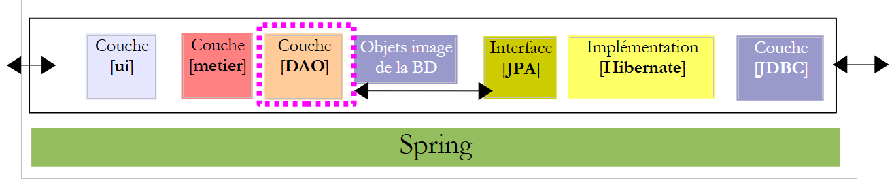 |
5.9.1. Implementierung
Literaturempfehlung: Abschnitt 3.1.3 von [ref1]
Aufgabe: Schreiben Sie unter Verwendung der Spring/JPA-Integration die Klassen [CotisationDao, IndemniteDao, EmployeDao], um die Schnittstellen [ICotisationDao, IIndemniteDao, IEmployeDao] zu implementieren. Jede Klassenmethode fängt alle Ausnahmen ab und verpackt sie in eine [PamException] mit einem für die abgefangene Ausnahme spezifischen Fehlercode.
Die Implementierungsklassen werden Teil des Pakets [dao] sein:
 |
5.9.2. Konfiguration
Literaturempfehlung: Abschnitt 3.1.5 in [ref1]
Die DAO/JPA-Integration wird über die Spring-Datei [spring-config-dao.xml] und die JPA-Datei [persistence.xml] konfiguriert:
 |
Frage: Geben Sie den Inhalt dieser beiden Dateien an. Wir gehen davon aus, dass die verwendete Datenbank die MySQL5-Datenbank [dbpam_hibernate] ist, die durch das SQL-Skript [dbpam_hibernate.sql] generiert wurde. Die Spring-Datei definiert die folgenden drei Beans: employeDao vom Typ EmployeDao, indemniteDao vom Typ IndemniteDao und cotisationDao vom Typ CotisationDao. Außerdem wird als JPA-Implementierung Hibernate verwendet.
5.9.3. Tests
Empfohlene Lektüre: Abschnitte 3.1.6 und 3.1.7 von [ref1]
Nachdem die [DAO]-Schicht nun geschrieben und konfiguriert ist, können wir sie testen. Die Testarchitektur sieht wie folgt aus:
 |
5.9.4. InitDB
Wir werden zwei Testprogramme für die [DAO]-Schicht erstellen. Diese werden im Paket [dao] [2] des Zweigs [Test Packages] [1] des NetBeans-Projekts abgelegt. Dieser Zweig ist nicht in dem Projekt enthalten, das mit der Option [Projekt erstellen] generiert wird, wodurch sichergestellt ist, dass die dort abgelegten Testprogramme nicht in die endgültige .jar-Datei des Projekts aufgenommen werden.
 |
Die im Zweig [Test Packages] abgelegten Klassen haben Zugriff auf die Klassen im Zweig [Source Packages] sowie auf die Klassenbibliotheken des Projekts. Wenn die Tests andere Bibliotheken als die im Projekt enthaltenen benötigen, müssen diese im Zweig [Test Libraries] [2] deklariert werden.
Die Testklassen verwenden das JUnit-Unit-Test-Tool:
- [JUnitInitDB] führt keine Tests durch. Es füllt die Datenbank mit einigen Datensätzen und zeigt diese anschließend auf der Konsole an.
- [JUnitDao] führt eine Reihe von Tests durch und überprüft deren Ergebnisse.
Das Grundgerüst der Klasse [JUnitInitDB] sieht wie folgt aus:
- Die Methode [init] wird vor dem Start der Testsuite ausgeführt (Annotation @BeforeClass). Sie instanziiert die [DAO]-Schicht.
- Die Methode [clean] wird vor jedem Test ausgeführt (Annotation @Before). Sie löscht die Datenbank.
- Die Methode [initDB] ist ein Test (Annotation @Test). Es ist der einzige. Ein Test muss Assert.assertCondition-Assertionsanweisungen enthalten. Hier gibt es keine. Die Methode ist daher ein Dummy-Test. Ihr Zweck ist es, die Datenbank mit einigen Zeilen zu füllen und anschließend den Datenbankinhalt auf der Konsole anzuzeigen. Hier werden die Methoden create und findAll der [DAO]-Schichten verwendet.
Frage: Vervollständigen Sie den Code für die Klasse [JUnitInitDB]. Orientieren Sie sich dabei am Beispiel aus Abschnitt 3.1.6 von [ref1]. Der Code erzeugt die in Abschnitt 5.1 gezeigte Ausgabe.
5.9.5. Implementierung des Test- s
Wir sind nun bereit, [InitDB] auszuführen. Wir beschreiben die Vorgehensweise unter Verwendung des DBMS MySQL5:
 |
- Die Klassen [1], die Konfigurationsdateien [2] und die Testklassen der [DAO]-Schicht [3] sind eingerichtet,
 |
- das Projekt wird erstellt [4]
- die Klasse [JUnitInitDB] wird ausgeführt [5]. Das DBMS MySQL5 wird mit einer vorhandenen Datenbank [dbpam_hibernate] gestartet,
- das Fenster [Test Results] [6] zeigt an, dass die Tests erfolgreich waren. Diese Meldung ist hier nicht von Bedeutung, da das Programm [JUnitInitDB] keine Assert.assertCondition-Assertionsanweisungen enthält, die zum Fehlschlagen des Tests führen könnten. Dennoch zeigt sie, dass während der Testausführung keine Ausnahmen aufgetreten sind.
Das Fenster [Output] enthält die Ausführungsprotokolle, einschließlich derjenigen von Spring und des Tests selbst. Die von der Klasse [JUnitInitDB] generierte Ausgabe lautet wie folgt:
Die Tabellen [EMPLOYEES, ALLOWANCES, CONTRIBUTIONS] wurden gefüllt. Dies kann überprüft werden, indem NetBeans mit der Datenbank [dbpam_hibernate] verbunden wird.
 |
- In [1] können Sie auf der Registerkarte [services] die Daten aus der Tabelle [employees] der Verbindung [dbpam_hibernate] [2] anzeigen,
- in [3] das Ergebnis.
5.9.6. JUnitD- ao
Wir sehen uns nun eine zweite Testklasse [JUnitDao] an:
 |
Das Klassenskelett sieht wie folgt aus:
1 2 3 4 5 6 7 8 9 10 11 12 13 14 15 16 17 18 19 20 21 22 23 24 25 26 27 28 29 30 31 32 33 34 35 36 37 38 39 40 41 42 43 44 45 46 47 48 49 50 51 52 53 54 55 56 57 58 59 60 61 62 63 64 65 66 67 68 69 70 71 72 73 74 75 76 77 78 79 80 81 82 83 84 85 86 87 88 89 90 91 92 93 94 95 96 97 98 99 100 101 102 103 104 105 106 107 108 109 110 111 112 113 114 115 116 117 118 119 120 121 122 123 124 125 126 127 128 129 130 131 132 133 134 135 136 137 138 139 140 141 142 143 144 145 146 147 148 149 150 151 152 153 154 155 156 157 158 159 160 161 162 163 164 165 166 167 168 169 170 171 172 173 174 175 176 177 178 179 180 181 182 183 184 185 186 187 | |
In der vorherigen Testklasse wird die Datenbank vor jedem Test gelöscht.
Frage: Schreiben Sie die folgenden Methoden:
1 – test02: basierend auf test01
2 – test03: Ein Mitarbeiter hat ein Feld vom Typ „Entschädigung“. Erstellen Sie daher eine Entität „Entschädigung“ und eine Entität „Mitarbeiter“
3 – test04.
Wenn wir genauso vorgehen wie bei der Testklasse [JUnitInitDB], erhalten wir folgende Ergebnisse:
 |
- In [1] führen wir die Testklasse
- in [2] die Testergebnisse im Fenster [Test Results]
Lassen Sie uns einen Fehler auslösen, um zu sehen, wie er auf der Ergebnisseite gemeldet wird:
Zeile 13: Die Überprüfung führt zu einem Fehler, da der Wert von Csgrds 3,49 beträgt (Zeile 8). Die Ausführung der Testklasse liefert folgende Ergebnisse:
 |
- Die Ergebnisseite [1] zeigt nun an, dass einige Tests fehlgeschlagen sind.
- In [2] finden Sie eine Zusammenfassung der Ausnahme, die zum Fehlschlagen des Tests geführt hat. Sie enthält die Zeilennummer im Java-Code, an der die Ausnahme aufgetreten ist.
5.10. Die [Business]-Schicht der [PAM]-Anwendung
Nachdem nun die [DAO]-Schicht geschrieben wurde, wenden wir uns der Untersuchung der Business-Schicht [2] zu:
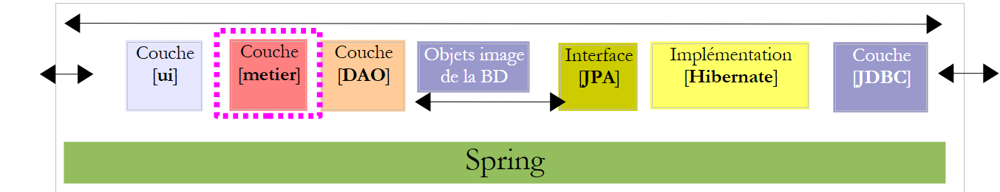 |
5.10.1. Die Java-Schnittstelle [IMetier]
Dies wurde in Abschnitt 5.7 beschrieben. Wir fassen es im Folgenden noch einmal zusammen:
Die Implementierung der [Business]-Schicht erfolgt in einem [Business]-Paket:
 |
Das [Business]-Paket wird neben der [IMetier]-Schnittstelle und ihrer Implementierung [Metier] zwei weitere Klassen enthalten: [Payroll] und [PayrollItems]. Die Klasse [Payroll] wurde in Abschnitt 5.7 kurz vorgestellt. Wir werden nun darauf zurückkommen.
5.10.2. Die Klasse [Payroll]
Die Methode [calculatePayStub] der Schnittstelle [IMetier] gibt ein Objekt vom Typ [PayStub] zurück, das die verschiedenen Elemente einer Gehaltsabrechnung darstellt. Ihre Definition lautet wie folgt:
- Zeile 7: Die Klasse implementiert die Schnittstelle „Serializable“, da ihre Instanzen über das Netzwerk ausgetauscht werden können.
- Zeile 9: der Mitarbeiter, auf den sich die Gehaltsabrechnung bezieht
- Zeile 10: die verschiedenen Beitragssätze
- Zeile 11: die verschiedenen Zulagen, die an den Index des Arbeitnehmers gekoppelt sind
- Zeile 12: die Bestandteile ihres Gehalts
- Zeilen 14–22: die beiden Konstruktoren der Klasse
- Zeilen 25–27: [toString]-Methode zur Identifizierung eines bestimmten [PayStub]-Objekts
- Zeile 29 und folgende: öffentliche Zugriffsmethoden auf die privaten Felder der Klasse
Die Klasse [ElementsSalaire], auf die in Zeile 11 der oben genannten Klasse [FeuilleSalaire] verwiesen wird, enthält die Elemente, aus denen sich eine Gehaltsabrechnung zusammensetzt. Ihre Definition lautet wie folgt:
- Zeile 3: Die Klasse implementiert die Schnittstelle „Serializable“, da sie eine Komponente der „PayrollClass“ ist, die serialisierbar sein muss.
- Zeile 6: das Grundgehalt
- Zeile 7: Sozialversicherungsbeiträge, die auf dieses Grundgehalt gezahlt werden
- Zeile 8: Tägliche Unterhaltszahlungen für Kinder
- Zeile 9: die täglichen Verpflegungszuschüsse für Kinder
- Zeile 10: das an die Kinderbetreuungskraft zu zahlende Nettogehalt
- Zeilen 12–24: Klassenkonstruktoren
- Zeilen 27–31: [toString]-Methode zur Identifizierung eines bestimmten [ElementsSalaire]-Objekts
- Zeilen 34 ff.: öffentliche Zugriffsmethoden auf die privaten Felder der Klasse
5.10.3. Die Implementierungsklasse [Metier] der [Business]-Schicht
Die Implementierungsklasse [Metier] der [Business]-Schicht könnte wie folgt aussehen:
- Zeile 5: Die Spring-Annotation @Transactional stellt sicher, dass jede Methode in der Klasse innerhalb einer Transaktion ausgeführt wird.
- Zeilen 9–10: Verweise auf die [DAO]-Schichten der Entitäten [Cotisation, Employe, Indemnite]
- Zeilen 14–17: die Methode [calculatePayroll]
- Zeilen 20–22: die Methode [findAllEmployees]
- Zeile 24 und folgende: die öffentlichen Zugriffsmethoden für die privaten Felder der Klasse
Frage: Schreiben Sie den Code für die Methode [findAllEmployees].
Frage: Schreiben Sie den Code für die Methode [calculatePayroll].
Beachten Sie folgende Punkte:
- Die Methode zur Berechnung des Gehalts wurde in Abschnitt 5.2 erläutert.
- Wenn der Parameter [SS] keinem Mitarbeiter entspricht (die [DAO]-Schicht hat einen Null-Zeiger zurückgegeben), löst die Methode eine [PamException] mit einem entsprechenden Fehlercode aus.
5.10.4. Testen der [business]-Schicht
Wir erstellen zwei Testprogramme:
 |
Die Testklassen [3] werden im Paket [metier] [2] innerhalb des Zweigs [Test Packages] [1] des Projekts erstellt.
Die Klasse [JUnitMetier_1] könnte wie folgt aussehen:
Die Klasse enthält keine Assert.assertCondition-Prüfungen. Wir versuchen lediglich, einige Gehälter zu berechnen, um sie anschließend manuell zu überprüfen. Die Bildschirmausgabe, die durch Ausführen der vorherigen Klasse erhalten wird, lautet wie folgt:
- Zeile 4: Gehaltsabrechnung von Justine Laverti
- Zeile 5: Lohnabrechnung von Marie Jouveinal
- Zeile 6: Die Ausnahme aufgrund der Tatsache, dass der Mitarbeiter mit der Sozialversicherungsnummer „xx“ nicht existiert.
Frage: Zeile 17 von [JUnitMetier_1] verwendet das Spring-Bean namens „metier“. Geben Sie die Definition dieses Beans in der Datei [spring-config-metier-dao.xml] an.
Die Klasse [JUnitMetier_2] könnte wie folgt aussehen:
Die Klasse [JUnitMetier_2] ist eine Kopie der Klasse [JUnitMetier_1], mit dem Unterschied, dass diesmal die Assertions in die Methode test01 eingefügt wurden.
Frage: Schreiben Sie die Methode test01.
Bei der Ausführung der Klasse [JUnitMetier_2] erhält man, wenn alles gut geht, folgende Ergebnisse:

5.11. Die [ui]-Schicht der [PAM]-Anwendung – Version -Konsole
Nachdem nun die [business]-Schicht geschrieben wurde, müssen wir noch die [ui]-Schicht schreiben [1]:
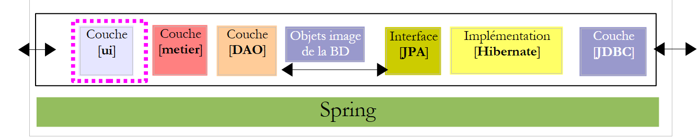 |
Wir werden zwei verschiedene Implementierungen der [ui]-Schicht erstellen: eine Konsolenversion und eine Swing-GUI-Version:
 |
5.11.1. Die Klasse [ ui.console.Main]
Wir konzentrieren uns zunächst auf die Konsolenanwendung, die durch die oben genannte Klasse [ui.console.Main] implementiert wird. Ihre Funktionsweise wurde in Abschnitt 5.3 beschrieben. Das Grundgerüst der Klasse [Main] könnte wie folgt aussehen:
Frage: Vervollständigen Sie den obigen Code.
5.11.2. Ausführung
Um die Klasse [ui.console.Main] auszuführen, gehen Sie wie folgt vor:
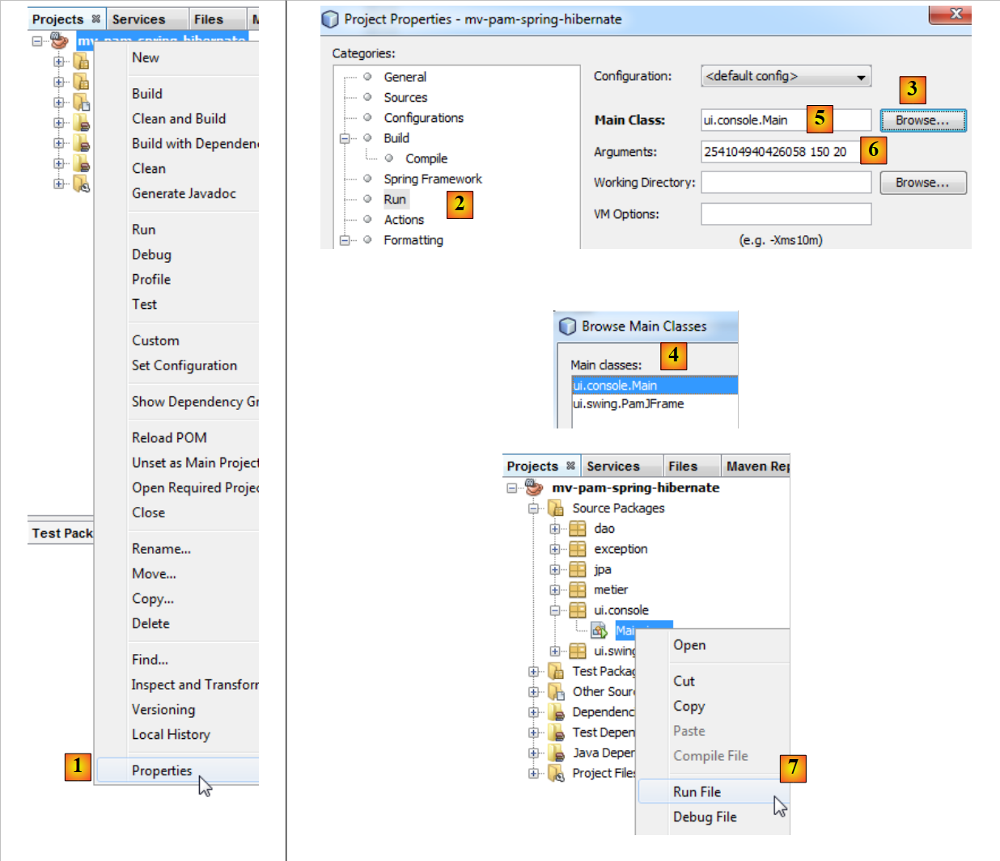 |
- Wählen Sie in [1] die Projekteigenschaften aus,
- wählen Sie in [2] die Eigenschaft [Ausführen] des Projekts aus,
- verwenden Sie die Schaltfläche [3], um die auszuführende Klasse (die sogenannte Hauptklasse) anzugeben,
- wählen Sie die Klasse [4] aus,
- Die Klasse ist in [5] aufgeführt. Diese Klasse benötigt drei Argumente zur Ausführung (SS-Nummer, Anzahl der geleisteten Arbeitsstunden, Anzahl der Arbeitstage). Diese Argumente werden in [6] eingegeben,
- sobald dies geschehen ist, kann das Projekt ausgeführt werden [7]. Die vorstehende Konfiguration bedeutet, dass die Klasse [ui.console.Main] ausgeführt wird.
Die Ergebnisse der Ausführung werden im Fenster [output] angezeigt:
 |  |
5.12. Die [ui]-Ebene der [PAM]-Anwendung – grafische Version
Wir werden nun die [ui]-Ebene mit einer grafischen Benutzeroberfläche implementieren:
 |
 |
- in [1], die Klasse [PamJFrame] der grafischen Benutzeroberfläche
- in [2]: die grafische Benutzeroberfläche
5.12.1. Ein kurzes Tutorial
Um die grafische Benutzeroberfläche zu erstellen, gehen Sie wie folgt vor:
 |
- [1]: Erstellen Sie eine neue Datei über die Schaltfläche [1] [Neue Datei...]
- [2]: Wählen Sie die Dateikategorie [Swing-GUI-Formulare], d. h. grafische Formulare
- [3]: Wählen Sie den Typ [JFrame-Formular], einen leeren Formulartyp
 |
- [5]: Benennen Sie das Formular; dies ist gleichzeitig der Klassenname
- [6]: Ordne das Formular einem Paket zu
- [8]: Das Formular wird zur Projektstruktur hinzugefügt
- [9]: Auf das Formular kann über zwei Ansichten zugegriffen werden: [Design] [9], in der Sie die verschiedenen Komponenten des Formulars entwerfen können, und [Source] [10 unten], die Zugriff auf den Java-Code des Formulars bietet. Letztendlich ist ein Formular eine Java-Klasse wie jede andere auch. Die Ansicht [Design] ist ein Werkzeug zum Entwerfen des Formulars. Jedes Mal, wenn im Modus [Design] eine Komponente hinzugefügt wird, wird in der Ansicht [Quelle] entsprechender Java-Code hinzugefügt.
 |
- [11]: Die Liste der für ein Formular verfügbaren Swing-Komponenten finden Sie im Fenster [Palette].
- [12]: Das Fenster [Inspector] zeigt die Baumstruktur der Formularkomponenten an. Komponenten mit einer visuellen Darstellung befinden sich im Zweig [JFrame]; die anderen im Zweig [Other Components].
 |
- In [13] wählen wir mit einem einzigen Klick eine [JLabel]-Komponente aus
- In [14] ziehen wir sie im [Design]-Modus auf das Formular
- In [15] definieren wir die Eigenschaften des JLabel (Text, Schriftart).
 |
- In [16] das Ergebnis.
- In [17] fordern wir eine Vorschau des Formulars an
- In [18] das Ergebnis
- In [19] wurde das Label [JLabel1] zum Komponentenbaum im [Inspector]-Fenster hinzugefügt
 |
- In [20] und [21]: In der Ansicht [Source] des Formulars wurde Java-Code hinzugefügt, um das hinzugefügte JLabel zu verarbeiten.
Ein Tutorial zum Erstellen von Formularen mit NetBeans ist unter der URL [http://www.netbeans.org/kb/trails/matisse.html] verfügbar.
5.12.2. Die [PamJFrame]-GUI
Wir werden die folgende grafische Benutzeroberfläche erstellen:
 |
- in [1], die grafische Benutzeroberfläche
- in [2] die Baumstruktur ihrer Komponenten: ein JLabel und sechs JPanel-Container
JLabel1
 |
JPanel1
 |  |
JPanel2
 |  |
JPanel3
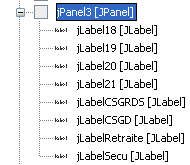 |  |
JPanel4
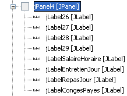 |  |
JPanel5
 | 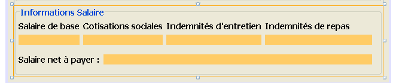 |
Praxisübung: Erstellen Sie die zuvor beschriebene grafische Benutzeroberfläche mithilfe des Tutorials [http://www.netbeans.org/kb/trails/matisse.html].
5.12.3. Ereignisse der grafischen Benutzeroberfläche
Empfohlene Lektüre: das Kapitel [Grafische Benutzeroberflächen] in [ref2].
Wir werden den Klick auf die Schaltfläche [jButtonSalaire] behandeln. Um die Methode zur Behandlung dieses Ereignisses zu erstellen, können wir wie folgt vorgehen:
 |
Der Handler für den Klick auf die Schaltfläche [JButtonSalaire] wird generiert:
Der Java-Code, der die vorherige Methode mit dem Klick auf die Schaltfläche [JButtonSalaire] verknüpft, wird ebenfalls generiert:
Die Zeilen 2–5 legen fest, dass der Klick (evt vom Typ ActionPerformed) auf die Schaltfläche [jButtonSalaire] (Zeile 2) von der Methode [jButtonSalaireActionPerformed] (Zeile 4) verarbeitet werden muss.
Wir werden auch das [caretUpdate]-Ereignis (Cursorbewegung) im Eingabefeld [jTextFieldHT] behandeln. Um den Handler für dieses Ereignis zu erstellen, gehen wir wie zuvor vor:
 |
Der Handler für das [caretUpdate]-Ereignis im Eingabefeld [jTextFieldHT] wird generiert:
Der Java-Code, der die vorherige Methode an das [caretUpdate]-Ereignis des Textfelds [jTextFieldHT] bindet, wird ebenfalls generiert:
Die Zeilen 1–4 geben an, dass das [caretUpdate]-Ereignis (Zeile 2) des [jTextFieldHT]-Buttons (Zeile 1) von der [jTextFieldHTCaretUpdate]-Methode (Zeile 3) verarbeitet werden soll.
5.12.4. Initialisierung der GUI
Kommen wir zurück zur Architektur unserer Anwendung:
 |
Die [ui]-Schicht benötigt eine Referenz auf die [business]-Schicht. Erinnern wir uns daran, wie diese Referenz in der Konsolenanwendung abgerufen wurde:
Die Vorgehensweise ist in der GUI-Anwendung identisch. Bei der Initialisierung der GUI-Anwendung muss auch die Referenz [IMetier metier] aus Zeile 3 oben initialisiert werden. Der für die GUI generierte Code lautet derzeit wie folgt:
- Zeilen 29–35: die statische Methode [main], die die Anwendung startet
- Zeile 32: Eine Instanz der GUI [PamJFrame] wird erstellt und sichtbar gemacht.
- Zeilen 7–9: Der GUI-Konstruktor.
- Zeile 8: Aufruf der in Zeile 17 definierten Methode [initComponents]. Diese Methode wird automatisch auf der Grundlage der im [Design]-Modus durchgeführten Arbeit generiert. Ändern Sie sie nicht.
- Zeile 21: Die Methode, die die Bewegung des Eingabecursors im Feld [jTextFieldHT] übernimmt
- Zeile 25: Die Methode, die den Klick auf die Schaltfläche [jButtonSalaire] verarbeitet
Um dem obigen Code eigene Initialisierungen hinzuzufügen, können wir wie folgt vorgehen:
- Zeile 4: Wir rufen eine benutzerdefinierte Methode auf, um unsere eigenen Initialisierungen durchzuführen. Diese werden durch den Code in den Zeilen 10–42 definiert
Frage: Vervollständigen Sie den Code für die Prozedur [doMyInit] anhand der Kommentare.
5.12.5. Ereignisbehandler
Frage: Schreiben Sie die Methode [jTextFieldHTCaretUpdate]. Diese Methode muss sicherstellen, dass die Schaltfläche [jButtonSalaire] deaktiviert wird, wenn die Daten im Feld [jTextFieldHT] keine reelle Zahl >=0 sind.
Frage: Schreiben Sie die Methode [jButtonSalaireActionPerformed], die die Gehaltsabrechnung für den in [jComboBoxEmployes] ausgewählten Mitarbeiter anzeigen muss.
5.12.6. Ausführen der GUI
Um die GUI auszuführen, ändern Sie die [Run]-Konfiguration des Projekts:
 |
- Geben Sie unter [1] die GUI-Klasse ein
Das Projekt muss vollständig sein und die Konfigurationsdateien (persistence.xml, spring-config-metier-dao.xml) sowie die GUI-Klasse enthalten. Starten Sie das Ziel-DBMS, bevor Sie das Projekt ausführen.
5.13. Implementierung der JPA-Schicht mit EclipseLink
Wir interessieren uns für die folgende Architektur, bei der die JPA-Schicht nun durch EclipseLink implementiert wird:
 |
5.13.1. Das NetBeans-Projekt
Das neue NetBeans-Projekt wird durch Kopieren des vorherigen Projekts erstellt:
 |
- in [1]: Klicken Sie mit der rechten Maustaste auf das Hibernate-Projekt und wählen Sie „Kopieren“
- und wählen Sie über die Schaltfläche [2] den übergeordneten Ordner für das neue Projekt aus. Der Ordnername erscheint in [3].
- Geben Sie in [4] einen Namen für das neue Projekt ein
- in [5] den Namen des Projektordners
 |
- In [1] wurde das neue Projekt erstellt. Es hat denselben Namen wie das ursprüngliche Projekt
- in [2] und [3], benennen Sie es in [mv-pam-spring-eclipselink] um.
Das Projekt muss an zwei Stellen geändert werden, um es an die neue JPA-/EclipseLink-Schicht anzupassen:
- In [4] müssen die Spring-Konfigurationsdateien geändert werden. Hier befindet sich die Konfiguration der JPA-Schicht.
- In [5] müssen die Projektbibliotheken geändert werden: Die Hibernate-Bibliotheken müssen durch die von EclipseLink ersetzt werden.
Beginnen wir mit dem letztgenannten Punkt. Die Datei [pom.xml] für das neue Projekt sieht wie folgt aus:
<project xmlns="http://maven.apache.org/POM/4.0.0" xmlns:xsi="http://www.w3.org/2001/XMLSchema-instance"
xsi:schemaLocation="http://maven.apache.org/POM/4.0.0 http://maven.apache.org/xsd/maven-4.0.0.xsd">
<modelVersion>4.0.0</modelVersion>
<groupId>istia.st</groupId>
<artifactId>mv-pam-spring-eclipselink</artifactId>
<version>1.0-SNAPSHOT</version>
<packaging>jar</packaging>
<name>mv-pam-spring-eclipselink</name>
<url>http://maven.apache.org</url>
<repositories>
<repository>
<url>http://repo1.maven.org/maven2/</url>
<id>swing-layout</id>
<layout>default</layout>
<name>Repository for library Library[swing-layout]</name>
</repository>
<repository>
<url>http://download.eclipse.org/rt/eclipselink/maven.repo/</url>
<id>eclipselink</id>
<layout>default</layout>
<name>Repository for library Library[eclipselink]</name>
</repository>
</repositories>
<properties>
<project.build.sourceEncoding>UTF-8</project.build.sourceEncoding>
</properties>
<dependencies>
<dependency>
<groupId>junit</groupId>
<artifactId>junit</artifactId>
<version>4.10</version>
<scope>test</scope>
<type>jar</type>
</dependency>
<dependency>
<groupId>commons-dbcp</groupId>
<artifactId>commons-dbcp</artifactId>
<version>1.2.2</version>
</dependency>
<dependency>
<groupId>commons-pool</groupId>
<artifactId>commons-pool</artifactId>
<version>1.6</version>
</dependency>
<dependency>
<groupId>org.springframework</groupId>
<artifactId>spring-tx</artifactId>
<version>3.1.1.RELEASE</version>
<type>jar</type>
</dependency>
<dependency>
<groupId>org.springframework</groupId>
<artifactId>spring-beans</artifactId>
<version>3.1.1.RELEASE</version>
<type>jar</type>
</dependency>
<dependency>
<groupId>org.springframework</groupId>
<artifactId>spring-context</artifactId>
<version>3.1.1.RELEASE</version>
<type>jar</type>
</dependency>
<dependency>
<groupId>org.springframework</groupId>
<artifactId>spring-orm</artifactId>
<version>3.1.1.RELEASE</version>
<type>jar</type>
</dependency>
<dependency>
<groupId>org.eclipse.persistence</groupId>
<artifactId>eclipselink</artifactId>
<version>2.3.0</version>
</dependency>
<dependency>
<groupId>org.eclipse.persistence</groupId>
<artifactId>javax.persistence</artifactId>
<version>2.0.3</version>
</dependency>
<dependency>
<groupId>mysql</groupId>
<artifactId>mysql-connector-java</artifactId>
<version>5.1.6</version>
</dependency>
<dependency>
<groupId>org.swinglabs</groupId>
<artifactId>swing-layout</artifactId>
<version>1.0.3</version>
</dependency>
</dependencies>
</project>
- Zeilen 73–82: Abhängigkeiten für die EclipseLink-JPA-Implementierung,
- Zeilen 19–24: das Maven-Repository für EclipseLink.
Die Spring-Konfigurationsdateien müssen geändert werden, um anzugeben, dass sich die JPA-Implementierung geändert hat. In beiden Dateien ändert sich nur der Abschnitt, der die JPA-Schicht konfiguriert. In [spring-config-metier-dao.xml] steht beispielsweise:
In den Zeilen 19–36 wird die JPA-Schicht konfiguriert. Als JPA-Implementierung wird Hibernate verwendet (Zeile 22). Außerdem ist die Zieldatenbank [dbpam_hibernate] (Zeile 41).
Um zu einer JPA/EclipseLink-Implementierung zu wechseln, werden die obigen Zeilen 19–35 durch die folgenden Zeilen ersetzt:
- Zeile 5: Die verwendete JPA-Implementierung ist EclipseLink
- Zeile 9: Die Eigenschaft „databasePlatform“ legt das Ziel-DBMS fest, in diesem Fall MySQL
- Zeile 11: Zum Generieren der Datenbanktabellen bei der Instanziierung der JPA-Schicht. Hier ist die Eigenschaft auskommentiert.
- Zeile 7: Zur Anzeige der von der JPA-Schicht ausgegebenen SQL-Anweisungen auf der Konsole. Hier ist die Eigenschaft auskommentiert.
Zusätzlich wird die Zieldatenbank zu [dbpam_eclipselink] (Zeile 4 unten):
5.13.2. Ausführen der Tests
Bevor die gesamte Anwendung getestet wird, empfiehlt es sich, zu überprüfen, ob die JUnit-Tests mit der neuen JPA-Implementierung erfolgreich durchlaufen werden. Bevor wir sie ausführen, löschen wir zunächst die Tabellen aus der Datenbank. Erstellen Sie dazu bei Bedarf auf der Registerkarte [Runtime] in NetBeans eine Verbindung zur Datenbank dbpam_eclipselink / MySQL5. Sobald die Verbindung zur Datenbank dbpam_eclipselink / MySQL5 hergestellt ist, können Sie wie unten gezeigt mit dem Löschen der Tabellen fortfahren:
- [1]: vor dem Löschen
- [2]: nach dem Löschen
 |
Sobald dies erledigt ist, können Sie den ersten Test auf der [DAO]-Ebene ausführen: InitDB, der die Datenbank befüllt. Um sicherzustellen, dass die zuvor gelöschten Tabellen von der Anwendung neu erstellt werden, stellen Sie sicher, dass in der Spring JPA-/EclipseLink-Konfiguration die Zeile:
vorhanden ist und nicht auskommentiert ist.
Wir erstellen das Projekt und führen dann den [JUnit- -InitDB]-Test aus:
 |
- In [1] wird der InitDB-Test ausgeführt.
- In [2] schlägt er fehl. Die Ausnahme wird von Spring ausgelöst und nicht von einem fehlgeschlagenen Test.
Ursache: org.springframework.beans.factory.BeanCreationException: Fehler beim Erstellen der Bean mit dem Namen „entityManagerFactory“, definiert in der Klassenpfad-Ressource [spring-config-DAO.xml]: Aufruf der init-Methode fehlgeschlagen; verschachtelte Ausnahme ist java.lang.IllegalStateException: Muss mit Java-Agent gestartet werden, um InstrumentationLoadTimeWeaver zu verwenden. Siehe Spring-Dokumentation.
Spring weist darauf hin, dass ein Konfigurationsproblem vorliegt. Die Meldung ist unklar. Der Grund für die Ausnahme wurde in Abschnitt 3.1.9 von [ref1] erläutert. Damit die Spring/EclipseLink-Konfiguration funktioniert, muss die JVM, auf der die Anwendung läuft, mit einem bestimmten Parameter, einem Java-Agenten, gestartet werden. Das Format dieses Parameters lautet wie folgt:
[spring-agent.jar] ist der Java-Agent, den die JVM benötigt, um die Spring/EclipseLink-Konfiguration zu verwalten.
Beim Ausführen eines Projekts ist es möglich, Argumente an die JVM zu übergeben:
 |
- In [1] können Sie auf die Projekteigenschaften zugreifen
- In [2] die Ausführungseigenschaften
- In [3] übergeben Sie den Parameter -javaagent an die JVM
5.13.3. InitDB
Nun können wir [InitDB] erneut testen. Diesmal lauten die Ergebnisse wie folgt:
 |
- In [1] war der Test erfolgreich
- In [2] aktualisieren wir auf der Registerkarte [Services] die Verbindung von NetBeans zur Datenbank [dbpam_eclipselink]
- In [3] wurden vier Tabellen erstellt
 |
- In [5] zeigen wir den Inhalt der Tabelle [employees] an
- in [6] das Ergebnis.
5.13.4. JUnitDao
Die Ausführung der Testklasse [JUnitDao] kann fehlschlagen, obwohl sie mit der JPA/Hibernate-Implementierung erfolgreich war. Um zu verstehen, warum das so ist, wollen wir ein Beispiel analysieren.
Die zu testende Methode ist die folgende IndemniteDao.create-Methode:
- Zeilen 15–22: die zu testende Methode
Die Testmethode lautet wie folgt:
package dao;
...
public class JUnitDao {
// layers DAO
static private IEmployeDao employeDao;
static private IIndemniteDao indemniteDao;
static private ICotisationDao cotisationDao;
@BeforeClass
public static void init() {
// log
log("init");
// application configuration
ApplicationContext ctx = new ClassPathXmlApplicationContext("spring-config-DAO.xml");
// layers DAO
employeDao = (IEmployeDao) ctx.getBean("employeDao");
indemniteDao = (IIndemniteDao) ctx.getBean("indemniteDao");
cotisationDao = (ICotisationDao) ctx.getBean("cotisationDao");
}
@Before()
public void clean() {
// empty the base
for (Employe employe : employeDao.findAll()) {
employeDao.destroy(employe);
}
for (Cotisation cotisation : cotisationDao.findAll()) {
cotisationDao.destroy(cotisation);
}
for (Indemnite indemnite : indemniteDao.findAll()) {
indemniteDao.destroy(indemnite);
}
}
// logs
private static void log(String message) {
System.out.println("----------- " + message);
}
// tests
….
@Test
public void test05() {
log("test05");
// we create two allowances with the same index
// violates index uniqueness constraint
boolean erreur = true;
Indemnite indemnite1 = null;
Indemnite indemnite2 = null;
Throwable th = null;
try {
indemnite1 = indemniteDao.create(new Indemnite(1, 1.93, 2, 3, 12));
indemnite2 = indemniteDao.create(new Indemnite(1, 1.93, 2, 3, 12));
erreur = false;
} catch (PamException ex) {
th = ex;
// checks
Assert.assertEquals(31, ex.getCode());
} catch (Throwable th1) {
th = th1;
}
// checks
Assert.assertTrue(erreur);
// exception chain
System.out.println("Chaîne des exceptions --------------------------------------");
System.out.println(th.getClass().getName());
while (th.getCause() != null) {
th = th.getCause();
System.out.println(th.getClass().getName());
}
// the 1st allowance had to be continued
Indemnite indemnite = indemniteDao.find(indemnite1.getId());
// check
Assert.assertNotNull(indemnite);
Assert.assertEquals(1, indemnite.getIndice());
Assert.assertEquals(1.93, indemnite.getBaseHeure(), 1e-6);
Assert.assertEquals(2, indemnite.getEntretienJour(), 1e-6);
Assert.assertEquals(3, indemnite.getRepasJour(), 1e-6);
Assert.assertEquals(12, indemnite.getIndemnitesCP(), 1e-6);
// the second indemnity should not have persisted
List<Indemnite> indemnites = indemniteDao.findAll();
int nbIndemnites = indemnites.size();
Assert.assertEquals(nbIndemnites, 1);
}
...
}
Frage: Erläutern Sie, was der Test „test05“ bewirkt, und geben Sie die erwarteten Ergebnisse an.
Die mit einer JPA/Hibernate-Schicht erzielten Ergebnisse lauten wie folgt:
Der Test ist erfolgreich, was bedeutet, dass die Assertions verifiziert wurden und keine Ausnahme aus der Testmethode ausgelöst wurde.
Frage: Erkläre, was passiert ist.
Die mit einer JPA/EclipseLink-Schicht erzielten Ergebnisse lauten wie folgt:
Wie zuvor bei Hibernate ist der Test erfolgreich, was bedeutet, dass die Assertions verifiziert wurden und keine Ausnahme aus der Testmethode ausgelöst wird.
Frage: Erklären Sie, was passiert ist.
Frage: Was können wir aus diesen beiden Beispielen über die Austauschbarkeit von JPA-Implementierungen schließen? Ist sie hier vollständig gegeben?
5.13.5. Die anderen Tests
Sobald die [DAO]-Schicht getestet und für korrekt befunden wurde, können wir mit dem Testen der [Business]-Schicht und des Projekts selbst in seiner Konsolen- oder grafischen Version fortfahren. Eine Änderung der JPA-Implementierung hat keine Auswirkungen auf die [Business]- und [UI]-Schichten; wenn diese Schichten also mit Hibernate funktioniert haben, werden sie auch mit EclipseLink funktionieren, mit wenigen Ausnahmen: Das vorherige Beispiel zeigt, dass die von den [DAO]-Schichten ausgelösten Ausnahmen unterschiedlich sein können. Im Testfall löst Spring / JPA / Hibernate also eine [PamException] aus, eine für die [pam]-Anwendung spezifische Ausnahme, während Spring / JPA / EclipseLink eine [TransactionSystemException] auslöst, eine Ausnahme aus dem Spring-Framework. Wenn die [ui]-Schicht im Testfall eine [PamException] erwartet, da sie mit Hibernate erstellt wurde, funktioniert sie beim Wechsel zu EclipseLink nicht mehr.
5.13.6. Zu erledigende Aufgaben
Praktische Aufgabe: Testen Sie die Konsolen- und Swing-Anwendungen erneut mit verschiedenen DBMS: MySQL5, Oracle XE, SQL Server.